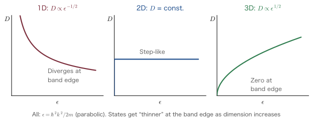
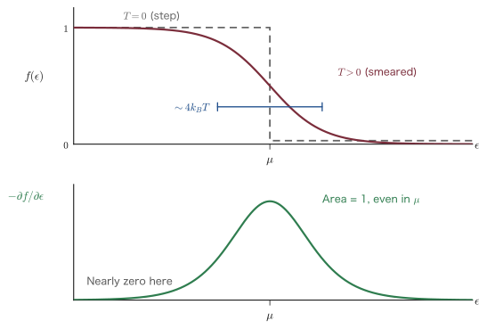

Appendix AMathematical Notes
Part III of this book (Chapters 12–20) takes Kittel’s “Introduction to Solid State Physics” as its backbone. Kittel’s book is a classic, but while reading it one stops many times. An equation is written as the starting point, a conclusion is written on the next page, and the algebra in between is omitted entirely. “What was multiplied on both sides?” “Where was the expansion truncated?” “Why did the sum become an integral?” Many readers have spent a great deal of time filling in such gaps on their own.
In this book we decided to write out all of that “in between.” However, if every chapter built up the mathematics from zero each time, the thread of the physics would be lost. We have therefore collected the tools that are used repeatedly in this Appendix A. Whenever the main text says “see Appendix A,” you can simply come back here.
We did not, however, want this to be a mere collection of formulas. If only the formulas are listed, then without knowing why they hold, they become unusable the moment one meets a problem whose form is slightly changed. We have therefore attached a short proof or derivation to almost every formula. None is longer than about 20 lines. Each can be followed with pencil and paper.
There are two ways to read it. One is to skim through it once before starting Part III. The other is to read only the relevant section when you get stuck in the main text. For the latter, we have placed in A.12 an index table of “which section is used where in the main text.”
- Fourier series and Fourier transforms—a reconfirmation that the reciprocal lattice is the “lattice of the Fourier transform” (A.1)
- Periodic boundary conditions and the counting of states—$\sum_\kk \to \frac{V}{(2\pi)^3}\int\dd^3k$, and the density of states in one, two, and three dimensions (A.2)
- A complete derivation of the Sommerfeld expansion—the mathematical core of why the electronic specific heat is proportional to $T$ (A.3)
- A table of the definite integrals that appear repeatedly in solid-state physics, and their derivations (A.4)
- The bare minimum on the Gamma function and the Riemann zeta function (A.5)
- Eigenvalue problems and secular equations—the general solution for $2\times2$ matrices, and the invariance of the trace and the determinant (A.6)
- Tensors, index notation, and Voigt notation (A.7)
- The essentials of complex numbers and the residue theorem, $\dfrac{1}{x\pm\ii\eta}=\PV\dfrac1x\mp\ii\pi\delta(x)$ (A.8)
- The Dirac delta function (A.9)
- The Legendre transformation and thermodynamic potentials (A.10)
- Statistical mechanics: the bare minimum—derivation of the Bose and Fermi distributions (A.11)
A.1 Fourier Series and Fourier Transforms
Solid-state physics is inseparable from Fourier analysis because a crystal is periodic. The natural language for periodic functions is the Fourier series, and the counterpart of its “frequency” is the reciprocal lattice vector. We also introduced the reciprocal lattice from a Fourier expansion in Chapter 3, but here we organize Fourier analysis itself, the tool behind that introduction.
A.1.1 The Fourier series in one dimension
Definition: Fourier series (complex form)
A function $n(x)$ of period $a$, that is, a function satisfying $n(x+a)=n(x)$, can be expanded as follows.
Here $p$ is an integer. The values $2\pi p/a$ are the “allowed wavenumbers,” and they are precisely the one-dimensional reciprocal lattice points.
Let us look carefully at where the coefficient formula \eqref{eq:A-fseries} comes from. Everything reduces to the following single orthogonality relation.
Derivation: Orthogonality of the exponential functions
For integers $p,p'$ we show that
$$ \frac{1}{a}\int_0^a \ee^{\ii\,2\pi(p-p')x/a}\,\dd x = \delta_{pp'} $$Let $m \equiv p-p'$. If $m=0$, the integrand is $1$, so the integral is $a$, and multiplying by $1/a$ gives $1$.
If $m\neq0$, the antiderivative of the exponential function can be used directly:
$$ \frac{1}{a}\int_0^a \ee^{\ii\,2\pi m x/a}\,\dd x = \frac{1}{a}\left[\frac{a}{\ii\,2\pi m}\,\ee^{\ii\,2\pi m x/a}\right]_0^a = \frac{1}{\ii\,2\pi m}\left(\ee^{\ii\,2\pi m} - 1\right) $$Since $m$ is an integer, $\ee^{\ii 2\pi m}=1$ (set $\theta=2\pi m$ in Euler's formula $\ee^{\ii\theta}=\cos\theta+\ii\sin\theta$). Hence the quantity in parentheses is $0$, and the integral is $0$.
This establishes the orthogonality. All that remains is to multiply both sides of the first equation of \eqref{eq:A-fseries} by $\ee^{-\ii 2\pi p' x/a}$, integrate from $0$ to $a$, and multiply by $1/a$.
$$ \frac{1}{a}\int_0^a n(x)\,\ee^{-\ii 2\pi p'x/a}\dd x = \sum_p n_p\cdot\frac{1}{a}\int_0^a \ee^{\ii 2\pi (p-p')x/a}\dd x = \sum_p n_p\,\delta_{pp'} = n_{p'} $$Within the sum, only the single term $p=p'$ survives. This is what the operation of “extracting a coefficient” amounts to. ∎
Supplement: The condition for a function to be real
If $n(x)$ takes real values (as the electron density and the potential do), then $n(x)^*=n(x)$ gives
$$ \sum_p n_p^*\,\ee^{-\ii 2\pi px/a} = \sum_p n_p\,\ee^{+\ii 2\pi px/a} $$Relabeling $p\to-p$ on the left-hand side turns it into $\sum_p n_{-p}^*\ee^{\ii 2\pi px/a}$, so comparing coefficients, we find that
$$ n_{-p} = n_p^{*} $$is necessary and sufficient. In particular, $n_0$ is real, and it equals the average value of $n(x)$.
Using this condition, we can combine the terms with $p$ and $-p$ and write
$$ n(x) = n_0 + \sum_{p>0}\left(n_p\ee^{\ii 2\pi px/a}+n_p^*\ee^{-\ii 2\pi px/a}\right) = n_0 + 2\sum_{p>0}\mathrm{Re}\!\left[n_p\,\ee^{\ii 2\pi px/a}\right] $$as an expression containing only real quantities. Writing $n_p=|n_p|\ee^{\ii\phi_p}$, we have $n(x)=n_0+2\sum_{p>0}|n_p|\cos(2\pi px/a+\phi_p)$. What X-ray diffraction can measure is only $|n_p|$; the phase $\phi_p$ cannot be measured—this is the “phase problem” in crystal structure analysis (see the discussion of the structure factor in Chapter 3).
A.1.2 The three-dimensional case for a crystal and the reciprocal lattice
The electron density $n(\rr)$ in a crystal satisfies, for any lattice translation vector $\TT=u_1\aa_1+u_2\aa_2+u_3\aa_3$ ($u_i$ integers),
$$ n(\rr+\TT) = n(\rr) $$What happens when we expand this in a Fourier series?
Derivation: Periodicity generates the reciprocal lattice
First, expand $n(\rr)$ in “all possible wave vectors.”
$$ n(\rr) = \sum_{\kk} n_{\kk}\,\ee^{\ii\kk\cdot\rr} $$Now impose the periodicity condition. Replacing $\rr\to\rr+\TT$ gives
$$ n(\rr+\TT) = \sum_{\kk} n_{\kk}\,\ee^{\ii\kk\cdot\rr}\,\ee^{\ii\kk\cdot\TT} $$For this to equal $n(\rr)$, we must have, for each $\kk$,
$$ n_\kk\left(\ee^{\ii\kk\cdot\TT}-1\right)=0 $$That is, the wave vectors for which $n_\kk\neq0$ are restricted to those satisfying
This condition is precisely the definition of the reciprocal lattice vector $\GG$ (Chapter 3). Therefore
$$ n(\rr) = \sum_{\GG} n_{\GG}\,\ee^{\ii\GG\cdot\rr}, \qquad n_{\GG} = \frac{1}{V_{\text{cell}}}\int_{\text{cell}} n(\rr)\,\ee^{-\ii\GG\cdot\rr}\,\dd^3r $$The integral extends over one primitive cell. ∎
Physical Meaning: What the reciprocal lattice is
In Chapter 3 as well, the reciprocal lattice was introduced from a Fourier expansion in the same way, as the condition $\ee^{\ii\GG\cdot\TT}=1$, and then the explicit form $\bb_1 = 2\pi\,\dfrac{\aa_2\times\aa_3}{\aa_1\cdot(\aa_2\times\aa_3)}$ was constructed. Restating this now in the language of Fourier analysis, it becomes clear that the reciprocal lattice is nothing other than the set of wave vectors compatible with the periodicity of the crystal.
In other words, the reciprocal lattice is the Fourier transform of the real-space lattice. What was a set of points arranged on a lattice in real space is again a set of points arranged on a lattice in wave-vector space. This self-similar structure underlies the two pillars of solid-state physics: diffraction experiments (which give constructive interference only when $\Delta\kk=\GG$) and Bloch's theorem (the state is the same even if the $\kk$ of $\psi_\kk(\rr)$ is shifted by $\GG$).
Indeed, from $\bb_i\cdot\aa_j=2\pi\delta_{ij}$ we obtain $\GG\cdot\TT = (v_1\bb_1+v_2\bb_2+v_3\bb_3)\cdot(u_1\aa_1+u_2\aa_2+u_3\aa_3)=2\pi(v_1u_1+v_2u_2+v_3u_3)$, so \eqref{eq:A-recip} does indeed hold.
A.1.3 The Fourier transform — the limit of the series
To treat a function with no period (or with infinite period), we take the limit of the Fourier series. This limiting procedure follows exactly the same logic as the “counting of states” in A.2, so it is worth examining carefully here.
Derivation: Fourier series → Fourier transform
Consider a function that is periodic on an interval of length $L$. The allowed wavenumbers are $k_p = 2\pi p/L$ ($p$ an integer), and the spacing between adjacent wavenumbers is
$$ \Delta k = \frac{2\pi}{L} $$The Fourier series is
$$ f(x) = \sum_p f_p\,\ee^{\ii k_p x}, \qquad f_p = \frac{1}{L}\int_{-L/2}^{L/2} f(x)\,\ee^{-\ii k_p x}\dd x $$Here we redefine $\tilde f(k_p)\equiv L f_p$ (the trick is to multiply by $L$). Then
$$ f(x) = \frac{1}{L}\sum_p \tilde f(k_p)\,\ee^{\ii k_p x} = \frac{1}{2\pi}\sum_p \tilde f(k_p)\,\ee^{\ii k_p x}\,\underbrace{\frac{2\pi}{L}}_{\Delta k} $$As $L\to\infty$, $\Delta k\to0$, and the sum passes over to an integral as a Riemann sum.
Note that no $L$ remains in the expression for $\tilde f(k)$. The $L$ introduced by the definition $\tilde f=Lf_p$ exactly cancels the $1/L$ in the definition of $f_p$. ∎
Caution: Conventions for where to put the $2\pi$
There are at least three conventions for the Fourier transform.
- The convention of this book (asymmetric (physics) convention): no $2\pi$ in the forward transform and $1/2\pi$ in the inverse transform ($1/(2\pi)^3$ in three dimensions). Because the volume element in $\kk$ space is directly tied to the number of states, this is overwhelmingly the most convenient choice in solid-state physics.
- Symmetric convention: $1/\sqrt{2\pi}$ in both. Parseval's identity becomes clean.
- $\nu$ convention: uses $\ee^{-2\pi\ii\nu x}$ and attaches no coefficient to either transform. It is often used in signal processing.
When comparing formulas with other books, first check which convention is used. Most mishaps in which the $2\pi$ fails to match are caused by this.
The three-dimensional version simply does the same thing for each direction.
A.1.4 Parseval's identity
Derivation: Parseval (Plancherel) identity
In the convention of this book,
holds. The trick in the derivation is to rewrite only one factor of $|f|^2=f^*f$ in its Fourier representation.
$$ \int |f(x)|^2\dd x =\int \dd x\; f^*(x)\,\frac{1}{2\pi}\int \dd k\,\tilde f(k)\ee^{\ii kx} $$Exchanging the order of the $x$ and $k$ integrations gives
$$ =\frac{1}{2\pi}\int \dd k\,\tilde f(k)\underbrace{\int \dd x\, f^*(x)\,\ee^{\ii kx}}_{=\;\tilde f(k)^*} =\frac{1}{2\pi}\int|\tilde f(k)|^2\dd k $$The underbraced part equals $\tilde f(k)^*$ because, taking the complex conjugate of $\tilde f(k)=\int f(x)\ee^{-\ii kx}\dd x$, we get $\tilde f(k)^*=\int f^*(x)\ee^{+\ii kx}\dd x$. ∎
The counterpart for a periodic function (Fourier series) is
$$ \frac{1}{a}\int_0^a|n(x)|^2\dd x = \sum_p |n_p|^2 $$This form will be used in A.4 when we derive $\zeta(4)=\pi^4/90$.
A.1.5 Differentiation, convolution, and the Poisson equation
Theorem A.1: Differentiation becomes multiplication in $k$ space
$$ \frac{\dd f}{\dd x}\;\longleftrightarrow\;\ii k\,\tilde f(k), \qquad \nabla f \;\longleftrightarrow\; \ii\kk\,\tilde f(\kk), \qquad \nabla^2 f \;\longleftrightarrow\; -k^2\,\tilde f(\kk) $$Proof: Differentiate $f(x)=\frac{1}{2\pi}\int\tilde f(k)\ee^{\ii kx}\dd k$ with respect to $x$. Since the derivative acts only on $x$, it can be moved inside the integral, giving
$$ \frac{\dd f}{\dd x}=\frac{1}{2\pi}\int \tilde f(k)\,(\ii k)\,\ee^{\ii kx}\dd k $$That is, the Fourier coefficient of $\dd f/\dd x$ is $\ii k\tilde f(k)$. ∎
Physical Meaning: Differential equations become algebraic equations
The reason this is so powerful is that a differential equation is transformed into an algebraic equation. Fourier transforming the Poisson equation
$$ \nabla^2\phi(\rr) = -\frac{\rho(\rr)}{\epsilon_0} $$gives $-k^2\tilde\phi(\kk)=-\tilde\rho(\kk)/\epsilon_0$, that is,
$$ \tilde\phi(\kk)=\frac{\tilde\rho(\kk)}{\epsilon_0 k^2} $$so it is solved by a single division. For a point charge $\rho(\rr)=q\delta(\rr)$, $\tilde\rho=q$ and $\tilde\phi=q/\epsilon_0k^2$, and the inverse transform gives the Coulomb potential $q/4\pi\epsilon_0 r$. In other words,
$$ \frac{1}{(2\pi)^3}\int \frac{4\pi}{k^2}\ee^{\ii\kk\cdot\rr}\dd^3k=\frac{1}{r} \qquad\Longleftrightarrow\qquad \int\frac{\ee^{-\ii\kk\cdot\rr}}{r}\dd^3 r=\frac{4\pi}{k^2} $$This relation, “the Fourier transform of $1/r$ is $4\pi/k^2$,” is used repeatedly in the discussion of Thomas–Fermi screening in Chapter 18 and of the local electric field in Chapter 19. For a screened Coulomb (Yukawa-type) potential it becomes $4\pi/(k^2+k_s^2)$, which in real space is $\ee^{-k_s r}/r$.
Theorem A.2: Convolution theorem
Define the convolution by $(f*g)(x)\equiv\int f(x')g(x-x')\dd x'$. Then
$$ \widetilde{(f*g)}(k)=\tilde f(k)\,\tilde g(k) $$Proof: Substitute into the definition and change variables to $x''=x-x'$.
$$ \int\dd x\,\ee^{-\ii kx}\int\dd x' f(x')g(x-x') =\int\dd x'\,f(x')\int \dd x''\,g(x'')\,\ee^{-\ii k(x'+x'')} $$ $$ =\left(\int f(x')\ee^{-\ii kx'}\dd x'\right)\left(\int g(x'')\ee^{-\ii kx''}\dd x''\right)=\tilde f\tilde g $$Everything hinges on the exponential function separating as $\ee^{-\ii k(x'+x'')}=\ee^{-\ii kx'}\ee^{-\ii kx''}$. ∎
Where it is used: A crystal is the lattice $*$ the basis, so its Fourier transform is (the transform of the lattice) $\times$ (the transform of the basis) = (the reciprocal lattice) $\times$ (the structure factor). This theorem is the mathematical content of the statement made in Chapter 3 that “the lattice determines the positions of the peaks and the basis determines the peak heights.”
Check A.1
Compute the Fourier transform of the rectangular function of width $2b$, $f(x)=1\;(|x|\lt b)$, $0\;(|x|\gt b)$, and show that $\tilde f(k)=2\sin(kb)/k$. Confirm that $\tilde f$ approaches a $\delta$ function as $b\to\infty$ by comparing with the expression in A.9.
Hint: $\int_{-b}^{b}\ee^{-\ii kx}\dd x=\left[\frac{\ee^{-\ii kx}}{-\ii k}\right]_{-b}^{b}=\frac{\ee^{\ii kb}-\ee^{-\ii kb}}{\ii k}=\frac{2\sin kb}{k}$. Also verify that it becomes $2b$ (the width itself) as $k\to0$.
A.2 Periodic Boundary Conditions and Counting States
The technique of counting “how many states there are” is the tool used most often in solid-state physics. The Debye model of phonons (Chapter 14), the Fermi energy of the free-electron gas (Chapter 15), the carrier concentration in semiconductors (Chapter 17)—the starting point of every one of them is the counting of states. If we move on with this point left vague, the coefficients will inevitably fail to match somewhere.
A.2.1 Why impose periodic boundary conditions?
Why? The reason for using periodic boundary conditions instead of fixed ends
To treat a finite crystal, we must decide on a condition at the ends. The straightforward choice is the fixed-end boundary condition, “the wave function is $0$ at the surface,” but then the solutions become standing waves $\sin(k x)$, and we can no longer use the traveling wave $\ee^{\ii kx}$. Without traveling waves, it is hard to define the group velocity $v=\partial\omega/\partial k$ or the current.
So we connect the right end and the left end of a system of length $L$. In one dimension this makes a ring; in three dimensions it is the convention that “after advancing by $L$ we return to where we started.” This is called the Born–von Kármán periodic boundary conditions (PBC).
Physically, this is the approximation that “the influence of the ends is ignored.” Of $N\sim10^{23}$ atoms, only $N^{2/3}\sim10^{15}$ lie on the surface, a ratio of merely $10^{-8}$. As long as we discuss bulk properties, the choice of boundary condition does not affect the result.
Derivation: The allowed wavenumbers
Impose Eq. \eqref{eq:A-pbc} on the plane wave $\psi(x)=\ee^{\ii k_x x}$.
$$ \ee^{\ii k_x(x+L)}=\ee^{\ii k_x x} \quad\Longrightarrow\quad \ee^{\ii k_x L}=1 $$By Euler's formula, $\ee^{\ii\theta}=1$ holds when $\theta=2\pi\times$ an integer, so
The same holds for $y,z$. Therefore the allowed $\kk$ form a simple cubic lattice with spacing $2\pi/L$ in $\kk$ space.
The volume of $\kk$ space occupied by one state is
The larger $V$ is, the denser the points become, but the density is fixed at $V/(2\pi)^3$, independent of the details of the system. ∎
Caution: Comparing with the fixed-end condition gives the same answer
If we impose fixed ends $\psi(0)=\psi(L)=0$, the solutions are $\sin(k_xx)$ with $k_x=\pi n_x/L$ ($n_x=1,2,3,\ldots$). The spacing is $\pi/L$, half that of the PBC, but $n_x$ can take only positive values. Hence in three dimensions, we fill only $1/8$ of $\kk$ space (the octant with $k_x,k_y,k_z>0$) with a lattice of spacing $\pi/L$. The number of states is
$$ \frac{1}{8}\times\frac{1}{(\pi/L)^3}=\frac{L^3}{8\pi^3}=\frac{V}{(2\pi)^3} $$which agrees exactly with the PBC result, Eq. \eqref{eq:A-kvol}. The choice of boundary condition does not affect the density of states. We may safely use the PBC, which is easier to handle.
A.2.2 Converting a sum into an integral
Derivation: $\sum_\kk\to\frac{V}{(2\pi)^3}\int\dd^3k$
The number of states in an infinitesimal volume $\dd^3k$ of $\kk$ space is $\dd^3k$ divided by the “volume per state” $(2\pi)^3/V$, that is,
$$ \dd N_{\text{states}}=\frac{V}{(2\pi)^3}\dd^3k $$Therefore the operation of summing a function $F(\kk)$ of $\kk$ over all states can, as long as $L$ is sufficiently large and the $\kk$ points are dense, be replaced by an integral:
This is exactly the same operation as converting a Fourier series into a Fourier transform in A.1.3. Written for each dimension,
$$ \sum_{k}\to\frac{L}{2\pi}\int\dd k \;\;(1\text{-dimensional}),\qquad \sum_{\kk}\to\frac{A}{(2\pi)^2}\int\dd^2k \;\;(2\text{-dimensional}) $$where $L$, $A$, and $V$ are the length, area, and volume of the system, respectively. ∎
Caution: When to multiply by the spin factor 2
The $\sum_\kk$ in Eq. \eqref{eq:A-sum2int} is a sum over orbital states (wavenumbers) and does not include spin. For a particle with spin $1/2$ such as the electron, there are two states, $\uparrow$ and $\downarrow$, for each $\kk$, so when counting states we multiply by a factor of 2:
$$ \sum_{\kk,\sigma}=2\sum_{\kk}\;\longrightarrow\;\frac{2V}{(2\pi)^3}\int\dd^3k $$On the other hand,
- Phonons: there is no spin factor. Instead there are three polarization branches (one longitudinal and two transverse), so we multiply by a factor of 3 if necessary.
- Photons: the factor is 2, because there are two transverse-wave polarizations. A photon has spin 1, but because it is massless only the two states with helicity $\pm1$ are allowed, and we do not count $2S+1=3$.
- Electrons in a magnetic field and spin-polarized systems: the energies of $\uparrow$ and $\downarrow$ differ, so we must not simply multiply by 2. We treat $D_\uparrow(\epsilon)$ and $D_\downarrow(\epsilon)$ separately (Chapter 20).
In this book, to avoid confusion, we state each time “whether $D(\epsilon)$ includes spin.” By convention, the electronic density of states often includes spin (this book does so as well).
A.2.3 The general formula for the density of states
Definition: Density of states (DOS)
We write the number of states with energy between $\epsilon$ and $\epsilon+\dd\epsilon$ as $D(\epsilon)\dd\epsilon$. $D(\epsilon)$ is called the density of states. Using the delta function (A.9), it can be defined as
$$ D(\epsilon)=\sum_{\kk,\sigma}\delta(\epsilon-\epsilon_\kk) $$Its unit is [number of states/energy]. Some conventions use the quantity per unit volume, so be careful about the unit.
Derivation: The general formula as an integral over a constant-energy surface
Let $S(\epsilon)$ be the surface in $\kk$ space satisfying $\epsilon_\kk=\epsilon$ (the constant-energy surface). We want to find the volume of the shell between the surface at $\epsilon$ and the surface at $\epsilon+\dd\epsilon$.
At a point on the surface, if we advance by $\delta k_\perp$ in the direction perpendicular to the surface, the energy increases by $|\nabla_\kk\epsilon|\,\delta k_\perp$ (this is just the definition of the gradient; the gradient is perpendicular to the constant-energy surface). Since this equals $\dd\epsilon$,
$$ \delta k_\perp=\frac{\dd\epsilon}{|\nabla_\kk\epsilon_\kk|} $$The volume of the shell is $\int_{S(\epsilon)}\dd S\,\delta k_\perp$, so the density of states is
The leading factor $2$ comes from the spin sum $\sum_\sigma$ in the definition. In a convention that does not count spin, this $2$ should simply be dropped. ∎
This equation shows that the integrand diverges at points where $|\nabla_\kk\epsilon|=0$—the maxima, minima, and saddle points of a band. These are the van Hove singularities (Chapters 14 and 18). The fact that “the density of states peaks where the band is flat” comes from this denominator.
A.2.4 Concrete calculations — case analysis by dimension and dispersion relation
The forms actually used are almost all covered by the following two kinds of dispersion relations.
- Parabolic $\epsilon=\dfrac{\hbar^2k^2}{2m}$: free electrons (Chapter 15), the effective-mass approximation near a band edge (Chapter 17)
- Linear $\omega=vk$: acoustic phonons (Chapters 13 and 14), photons
Derivation: Three dimensions, parabolic dispersion (free electrons)
The procedure has three stages. (i) Count the number of states $N(k)$ inside a sphere of radius $k$, (ii) rewrite $k$ in terms of $\epsilon$, (iii) differentiate with respect to $\epsilon$.
(i) The volume of a sphere of radius $k$ is $\frac{4}{3}\pi k^3$. Dividing this by the volume per state, $(2\pi)^3/V$, and doubling for spin, we obtain
$$ N(k)=2\cdot\frac{V}{(2\pi)^3}\cdot\frac{4\pi k^3}{3} =\frac{2V}{8\pi^3}\cdot\frac{4\pi k^3}{3} =\frac{Vk^3}{3\pi^2} $$(ii) Solving $\epsilon=\hbar^2k^2/2m$ for $k$ gives $k=\sqrt{2m\epsilon}/\hbar$, that is, $k^3=(2m\epsilon/\hbar^2)^{3/2}$. Hence
(iii) We differentiate with respect to $\epsilon$. Since the derivative of $\epsilon^{3/2}$ is $\frac32\epsilon^{1/2}$,
The last form, $D=\frac{3N}{2\epsilon}$, is convenient to remember. Just think, “Differentiating $N\propto\epsilon^{3/2}$ brings $\frac32$ to the front and divides by $\epsilon$.” ∎
Physical Meaning: Putting in numbers for $\mathrm{Cu}$
Copper is $\mathrm{fcc}$ with $a=3.61\,\text{Å}$, has four atoms per conventional cell (cubic unit cell), and has one conduction electron per atom, so
$$ n=\frac{4}{(3.61\times10^{-8}\,\mathrm{cm})^3}=8.5\times10^{22}\ \mathrm{cm^{-3}} $$Writing Eq. \eqref{eq:A-N3d} in terms of $n=N/V$ gives $k_F=(3\pi^2n)^{1/3}$. Putting in the numbers, $k_F=1.36\times10^{8}\ \mathrm{cm^{-1}}=1.36\ \text{Å}^{-1}$.
$$ \epsilon_F=\frac{\hbar^2k_F^2}{2m}=7.0\ \mathrm{eV}, \qquad T_F=\frac{\epsilon_F}{k_B}=8.2\times10^4\ \mathrm{K} $$$\epsilon_F$ is $7\ \mathrm{eV}$, and the Fermi temperature is $8$ × 10⁴ $\mathrm{K}$. These are the characteristic “orders of magnitude” of the electron system of a metal. Room temperature, $300\ \mathrm{K}$, corresponds to $k_BT=0.026\ \mathrm{eV}$, so $k_BT/\epsilon_F\approx0.004$—that is, room temperature is extremely close to absolute zero for the electrons. This smallness is the reason the Sommerfeld expansion in Section A.3 is valid, and also the reason the electronic specific heat of a metal is far smaller than the classical value $\frac32Nk_B$.
The density of states is $D(\epsilon_F)=\frac{3N}{2\epsilon_F}$, which per atom is about $\frac{3}{2\times7.0}=0.21\ \mathrm{eV^{-1}}$.
Derivation: Two dimensions and one dimension (parabolic dispersion)
Two dimensions (area $A$): divide the area $\pi k^2$ of a circle of radius $k$ by $(2\pi)^2/A$, and double for spin.
$$ N(k)=2\cdot\frac{A}{(2\pi)^2}\cdot\pi k^2=\frac{Ak^2}{2\pi} $$Substituting $k^2=2m\epsilon/\hbar^2$ gives $N(\epsilon)=\dfrac{Am\epsilon}{\pi\hbar^2}$, and differentiating,
It does not depend on $\epsilon$! This is the characteristic feature of two-dimensional electron systems (semiconductor heterostructures, and ordinary quantum wells other than graphene).
One dimension (length $L$): the “length of the line segment” from $-k$ to $+k$ is $2k$. Divide this by $2\pi/L$ and double for spin.
$$ N(k)=2\cdot\frac{L}{2\pi}\cdot2k=\frac{2Lk}{\pi} $$The derivative of $k=\sqrt{2m\epsilon}/\hbar$ is $\dfrac{\dd k}{\dd\epsilon}=\dfrac{1}{\hbar}\sqrt{\dfrac{m}{2\epsilon}}$, so
It diverges at the band edge $\epsilon\to0$. This is just what was expected from $|\nabla_\kk\epsilon|\to0$ in Eq. \eqref{eq:A-dosgeneral}. ∎

Derivation: Linear dispersion $\omega=vk$ (phonons and photons)
This time we count not by “energy” but by “angular frequency $\omega$.” We compute for a single branch (polarization) and multiply by the number of branches if necessary.
Three dimensions: $N(\omega)=\dfrac{V}{(2\pi)^3}\cdot\dfrac{4\pi k^3}{3}=\dfrac{Vk^3}{6\pi^2}=\dfrac{V\omega^3}{6\pi^2v^3}$. Differentiating,
This $\omega^2$ is the origin of the $T^3$ law of the Debye model (Chapter 14).
Two dimensions: $N=\dfrac{A}{(2\pi)^2}\pi k^2=\dfrac{A\omega^2}{4\pi v^2}$, $D=\dfrac{A\omega}{2\pi v^2}\propto\omega$. In the two-dimensional Debye model the specific heat is proportional to $T^2$.
One dimension: $N=\dfrac{L}{2\pi}2k=\dfrac{L\omega}{\pi v}$, $D=\dfrac{L}{\pi v}=$ constant. The specific heat is proportional to $T$.
In general, for $\omega=vk$ in $d$ dimensions, $D(\omega)\propto\omega^{d-1}$, and the low-temperature specific heat is $C\propto T^{d}$. ∎
Why? A unified view of $D(\epsilon)\propto\epsilon^{d/2-1}$ and $D(\omega)\propto\omega^{d-1}$
Both follow at once as shown below. In $d$ dimensions the volume of a sphere of radius $k$ is $\propto k^d$, so $N\propto k^d$. Therefore
$$ D=\frac{\dd N}{\dd\epsilon}=\frac{\dd N}{\dd k}\frac{\dd k}{\dd\epsilon}\propto k^{d-1}\frac{1}{|\dd\epsilon/\dd k|} $$- Linear $\epsilon=\hbar vk$: since $\dd\epsilon/\dd k=$ constant, $D\propto k^{d-1}\propto\epsilon^{d-1}$.
- Parabolic $\epsilon=\hbar^2k^2/2m$: since $\dd\epsilon/\dd k\propto k$, $D\propto k^{d-2}\propto\epsilon^{(d-2)/2}=\epsilon^{d/2-1}$.
The only thing to remember is the single line, “divide $k^{d-1}$ (the area of the spherical surface) by the group velocity.” After that, just substitute the dispersion relation.
| Dimension | $\displaystyle\sum_\kk\to$ | $D(\epsilon)$ for $\epsilon=\hbar^2k^2/2m$ | $D(\omega)$ for $\omega=vk$ |
|---|---|---|---|
| 1 (length $L$) | $\dfrac{L}{2\pi}\displaystyle\int\dd k$ | $\dfrac{L}{2\pi\hbar}\sqrt{\dfrac{2m}{\epsilon}}\;\propto\epsilon^{-1/2}$ | $\dfrac{L}{\pi v}$ (constant) |
| 2 (area $A$) | $\dfrac{A}{(2\pi)^2}\displaystyle\int\dd^2k$ | $\dfrac{Am}{2\pi\hbar^2}$ (constant) | $\dfrac{A\omega}{2\pi v^2}\;\propto\omega$ |
| 3 (volume $V$) | $\dfrac{V}{(2\pi)^3}\displaystyle\int\dd^3k$ | $\dfrac{V}{4\pi^2}\left(\dfrac{2m}{\hbar^2}\right)^{3/2}\sqrt{\epsilon}\;\propto\epsilon^{1/2}$ | $\dfrac{V\omega^2}{2\pi^2v^3}\;\propto\omega^2$ |
| For electrons (spin $1/2$), everything is doubled. For phonons, multiply by 3 for the three polarizations (Debye model). The low-temperature specific heat is $C\propto T$ for the $\epsilon$ type and $C\propto T^d$ for the $\omega$ type. | |||
Supplement: How to determine the Debye frequency
In a real crystal with $N$ atoms, there are only $3N$ vibrational degrees of freedom. If we kept using $\omega=vk$ indefinitely, the number of states would grow without bound, so we cut it off at $3N$ states. This is the Debye cutoff.
$$ \int_0^{\omega_D}3D(\omega)\dd\omega=3N \quad\Longrightarrow\quad 3\cdot\frac{V}{2\pi^2v^3}\cdot\frac{\omega_D^3}{3}=3N $$Rearranging,
$\Theta_D$ is the Debye temperature. It is $343\ \mathrm{K}$ for $\mathrm{Cu}$, $645\ \mathrm{K}$ for $\mathrm{Si}$, $2230\ \mathrm{K}$ for diamond, and $105\ \mathrm{K}$ for $\mathrm{Pb}$. We can read off that the harder and lighter the material, the higher $\Theta_D$ is (because $v$ is larger). Details are in Chapter 14.
Check A.2
(1) The electrons of graphene have the linear dispersion $\epsilon=\hbar v_F|k|$ (two dimensions, $v_F\approx1\times10^6\ \mathrm{m/s}$). Show that the density of states is $D(\epsilon)\propto|\epsilon|$ and vanishes at $\epsilon=0$ (the Dirac point).
(2) Using $k_F=1.36\ \text{Å}^{-1}$ for copper, calculate the Fermi velocity $v_F=\hbar k_F/m$. What percentage of the speed of light is it?
Hint: (1) In two dimensions, $N\propto k^2\propto\epsilon^2$, and differentiating gives $D\propto\epsilon$. In addition to the spin factor of 2, there is a valley degeneracy of 2, so in fact a factor of 4 appears. (2) $v_F=1.57\times10^6\ \mathrm{m/s}$, about $0.5\%$ of the speed of light.
A.3 The Sommerfeld Expansion
When we calculate the properties of a metal, an integral of the following form always appears.
$$ I=\int_{-\infty}^{\infty} H(\epsilon)\,f(\epsilon)\,\dd\epsilon, \qquad f(\epsilon)=\frac{1}{\ee^{(\epsilon-\mu)/k_BT}+1} $$Here $f$ is the Fermi–Dirac distribution function, and $H(\epsilon)$ is a smooth function of $\epsilon$, such as the density of states $D(\epsilon)$ or $\epsilon D(\epsilon)$. This integral cannot be written in terms of elementary functions. However, under the condition $k_BT\ll\epsilon_F$, which always holds in metals, it can be expanded in powers of $k_BT/\epsilon_F$. This is the Sommerfeld expansion.
Kittel uses only the result of this expansion in Chapter 6 and relegates the intermediate steps to an “Appendix.” Here we fill in all of them.
A.3.1 Starting point — why $-\partial f/\partial\epsilon$ plays the leading role

Derivation: Producing $-\partial f/\partial\epsilon$ by integration by parts
Stage 1. Prepare an antiderivative of $H(\epsilon)$.
$$ K(\epsilon)\equiv\int_{-\infty}^{\epsilon}H(\epsilon')\,\dd\epsilon', \qquad \frac{\dd K}{\dd\epsilon}=H(\epsilon),\qquad K(-\infty)=0 $$Using this, we integrate $I=\int H f\,\dd\epsilon=\int K' f\,\dd\epsilon$ by parts.
$$ I=\Big[K(\epsilon)f(\epsilon)\Big]_{-\infty}^{\infty}-\int_{-\infty}^{\infty}K(\epsilon)\frac{\partial f}{\partial\epsilon}\dd\epsilon $$The boundary term vanishes. As $\epsilon\to-\infty$, $K\to0$. As $\epsilon\to+\infty$, $f\to0$, and since $f$ goes to $0$ exponentially fast, the product goes to $0$ even if $K$ grows polynomially. Hence
This is the starting point. Working with $-\partial f/\partial\epsilon$ rather than with $f$ itself is the sole and greatest device of the Sommerfeld expansion. ∎
Derivation: Three properties of $-\partial f/\partial\epsilon$
Setting $x\equiv\dfrac{\epsilon-\mu}{k_BT}$, we have $f=\dfrac{1}{\ee^{x}+1}$ and $\dfrac{\dd x}{\dd\epsilon}=\dfrac{1}{k_BT}$, so
$$ -\frac{\partial f}{\partial\epsilon} =-\frac{\dd f}{\dd x}\frac{\dd x}{\dd\epsilon} =\frac{1}{k_BT}\cdot\frac{\ee^{x}}{(\ee^{x}+1)^2} $$(We used $\dfrac{\dd}{\dd x}(\ee^x+1)^{-1}=-\dfrac{\ee^x}{(\ee^x+1)^2}$.)
Property 1: It is normalized.
$$ \int_{-\infty}^{\infty}\left(-\frac{\partial f}{\partial\epsilon}\right)\dd\epsilon =\Big[-f\Big]_{-\infty}^{\infty}=f(-\infty)-f(+\infty)=1-0=1 $$Property 2: It is an even function of $\epsilon-\mu$. Let $g(x)\equiv\dfrac{\ee^x}{(\ee^x+1)^2}$. Then
$$ g(-x)=\frac{\ee^{-x}}{(\ee^{-x}+1)^2} =\frac{\ee^{-x}\cdot \ee^{2x}}{(\ee^{-x}+1)^2\ee^{2x}} =\frac{\ee^{x}}{(1+\ee^{x})^2}=g(x) $$We merely multiplied the numerator and the denominator by $\ee^{2x}$. This symmetry keeps terms of $(k_BT)^{\text{odd}}$ out of the expansion.
Property 3: It is a sharp peak of width $\sim k_BT$. At $x=0$, $g=1/4$ is the maximum, and for $|x|\gtrsim4$ it is almost zero. Therefore, when $k_BT\ll\epsilon_F$, $-\partial f/\partial\epsilon$ is nearly a delta function standing at $\epsilon=\mu$. ∎
A.3.2 Carrying out the expansion
Derivation: The main part of the Sommerfeld expansion
Stage 2. Expand $K(\epsilon)$ in \eqref{eq:A-somm-start} in a Taylor series around $\epsilon=\mu$. This is a legitimate operation, because $-\partial f/\partial\epsilon$ takes appreciable values only in the neighborhood of $\mu$.
$$ K(\epsilon)=K(\mu)+K'(\mu)(\epsilon-\mu)+\frac{K''(\mu)}{2!}(\epsilon-\mu)^2+\frac{K'''(\mu)}{3!}(\epsilon-\mu)^3+\frac{K^{(4)}(\mu)}{4!}(\epsilon-\mu)^4+\cdots $$Substituting this gives
$$ I=\sum_{n=0}^{\infty}\frac{K^{(n)}(\mu)}{n!}\int_{-\infty}^{\infty}(\epsilon-\mu)^n\left(-\frac{\partial f}{\partial\epsilon}\right)\dd\epsilon $$Stage 3. Make each integral dimensionless. Substituting $x=(\epsilon-\mu)/k_BT$, $\dd\epsilon=k_BT\,\dd x$, and $(\epsilon-\mu)^n=(k_BT)^nx^n$, we obtain
$$ \int_{-\infty}^{\infty}(\epsilon-\mu)^n\left(-\frac{\partial f}{\partial\epsilon}\right)\dd\epsilon =(k_BT)^n\int_{-\infty}^{\infty}x^n\,\frac{\ee^x}{(\ee^x+1)^2}\,\dd x \equiv (k_BT)^n\,C_n $$The $1/k_BT$ and the $k_BT$ of $\dd\epsilon$ cancel each other, leaving cleanly only $(k_BT)^n$.
Stage 4. Evaluate $C_n$. By Property 2, $g(x)$ is an even function, so for odd $n$ the integrand is an odd function and $C_{\text{odd}}=0$. For the even ones (the derivation is deferred to A.4),
$$ C_0=1,\qquad C_2=\int_{-\infty}^{\infty}\frac{x^2\ee^x}{(\ee^x+1)^2}\dd x=\frac{\pi^2}{3},\qquad C_4=\frac{7\pi^4}{15} $$Stage 5. Put the pieces together. Noting that $K(\mu)=\int_{-\infty}^{\mu}H\dd\epsilon$, $K''=H'$, and $K^{(4)}=H'''$, we have
$$ I=\int_{-\infty}^{\mu}H\,\dd\epsilon +\frac{H'(\mu)}{2!}(k_BT)^2\frac{\pi^2}{3} +\frac{H'''(\mu)}{4!}(k_BT)^4\frac{7\pi^4}{15}+\cdots $$Simplify the coefficients: $\dfrac{1}{2}\cdot\dfrac{\pi^2}{3}=\dfrac{\pi^2}{6}$ and $\dfrac{1}{24}\cdot\dfrac{7\pi^4}{15}=\dfrac{7\pi^4}{360}$.
∎
Physical Meaning: What this formula says
The first term $\int_{-\infty}^{\mu}H\dd\epsilon$ is simply the value at $T=0$ (the integral when $f$ is a step function). The second and later terms are the finite-temperature corrections, whose magnitude is proportional to $(k_BT)^2$.
“There is no term linear in $T$”—this is of decisive importance. The smearing of the Fermi distribution is symmetric above and below $\mu$, so the electrons pushed up above $\mu$ and the holes left empty below $\mu$ cancel exactly at first order. Only from second order on do terms survive.
The expansion parameter is $(k_BT/\epsilon_F)^2$. For copper at room temperature, $(0.026/7.0)^2\approx1.4\times10^{-5}$. That is, the correction is of order $10^{-5}$, and a calculation at $T=0$ is practically sufficient. Conversely, what makes the Sommerfeld theory so interesting is that this tiny correction alone is enough to explain the electronic specific heat.
Supplement: Why the lower limit of the integral may be changed from $-\infty$ to $0$
In the derivation we took the lower limit to be $-\infty$, but the actual density of states is zero for $\epsilon\lt0$ (the band bottom is taken as $\epsilon=0$). Therefore we may simply set $H(\epsilon)=0$ for $\epsilon\lt0$, and the first term of \eqref{eq:A-sommerfeld} becomes $\int_0^\mu H\dd\epsilon$.
Strictly speaking, $H$ is discontinuous at $\epsilon=0$ (or of $\sqrt\epsilon$ type and hence not differentiable), so the premise of the Taylor expansion breaks down there. But that point lies $\epsilon_F/k_BT\sim10^2$ units of $k_BT$ away from $\mu$ (for copper at room temperature, $7.0/0.026\approx270$ units), and there $-\partial f/\partial\epsilon$ is unimaginably small, $\ee^{-270}\sim10^{-117}$. There is no practical harm.
A.3.3 Application — temperature dependence of the chemical potential and the electronic specific heat
Derivation: Temperature dependence of $\mu(T)$
The number of electrons $N$ does not depend on temperature. We use this as the condition to determine $\mu(T)$. Taking $H(\epsilon)=D(\epsilon)$ in \eqref{eq:A-sommerfeld}, we obtain
$$ N=\int_0^{\infty}D(\epsilon)f(\epsilon)\dd\epsilon =\int_0^{\mu}D(\epsilon)\dd\epsilon+\frac{\pi^2}{6}(k_BT)^2D'(\mu) $$On the other hand, at $T=0$, $N=\int_0^{\epsilon_F}D\dd\epsilon$. Equating the two, we get
$$ \int_{\epsilon_F}^{\mu}D(\epsilon)\dd\epsilon+\frac{\pi^2}{6}(k_BT)^2D'(\mu)=0 $$Since the difference between $\mu$ and $\epsilon_F$ is small, we approximate the first term as $\approx(\mu-\epsilon_F)D(\epsilon_F)$ and set $D'(\mu)\approx D'(\epsilon_F)$, which gives
$$ \mu-\epsilon_F=-\frac{\pi^2}{6}(k_BT)^2\frac{D'(\epsilon_F)}{D(\epsilon_F)} $$For free electrons, $D\propto\epsilon^{1/2}$, so $\dfrac{D'}{D}=\dfrac{\dd}{\dd\epsilon}\ln D=\dfrac{1}{2\epsilon}$. Hence
∎
Meaning: As the temperature is raised, the chemical potential decreases slightly. The reason is that the density of states increases with $\epsilon$. When electrons are pushed up above $\mu$, there are many seats above, so little energy is needed. To keep the number fixed, $\mu$ must be lowered. For copper at room temperature, $(\mu-\epsilon_F)/\epsilon_F\approx-1.2\times10^{-5}$, a shift of only about $0.1\ \mathrm{meV}$. This is why we may write $\mu\approx\epsilon_F$ for metals (for semiconductors the situation is completely different; see Chapter 17).
Derivation: Electronic specific heat $C_{\text{el}}=\gamma T$
The total energy is $U=\int_0^\infty \epsilon D(\epsilon)f(\epsilon)\dd\epsilon$. Taking $H(\epsilon)=\epsilon D(\epsilon)$, we use \eqref{eq:A-sommerfeld}. Since $H'=D+\epsilon D'$,
$$ U=\int_0^{\mu}\epsilon D\,\dd\epsilon+\frac{\pi^2}{6}(k_BT)^2\big[D(\mu)+\mu D'(\mu)\big] $$Differentiate with respect to $T$. For the first term, $\dfrac{\dd}{\dd T}\int_0^\mu \epsilon D\dd\epsilon=\mu D(\mu)\dfrac{\dd\mu}{\dd T}$ (the fundamental theorem of calculus). The $\mu$ dependence of the second term is a higher-order correction in $(k_BT)^2$, so we may fix $\mu\approx\epsilon_F$ there.
$$ C_{\text{el}}=\frac{\dd U}{\dd T} =\mu D(\mu)\frac{\dd\mu}{\dd T}+\frac{\pi^2}{3}k_B^2T\big[D(\epsilon_F)+\epsilon_F D'(\epsilon_F)\big] $$Differentiating \eqref{eq:A-muT} here gives $\dfrac{\dd\mu}{\dd T}=-\dfrac{\pi^2}{3}\dfrac{k_B^2T\,D'(\epsilon_F)}{D(\epsilon_F)}$. Substituting this and setting $\mu\approx\epsilon_F$, the first term becomes $-\dfrac{\pi^2}{3}k_B^2T\,\epsilon_F D'(\epsilon_F)$, which exactly cancels the $\epsilon_FD'$ of the second term. What remains is
∎
Inserting $D(\epsilon_F)=\dfrac{3N}{2\epsilon_F}$ for free electrons, we get
$$ C_{\text{el}}=\frac{\pi^2}{2}Nk_B\frac{T}{T_F} $$Compared with the classical expectation $\frac32Nk_B$, this is smaller by a factor $\dfrac{\pi^2}{3}\dfrac{T}{T_F}\approx0.01$—and this is the answer to the long-standing puzzle of why “electrons hardly contribute to the specific heat of a metal.” Because of the Pauli principle, only the small number of electrons within $k_BT$ of $\epsilon_F$ (a fraction of about $T/T_F$ of the total) are excited.
For copper, the measured value is $\gamma=0.695\ \mathrm{mJ\,mol^{-1}K^{-2}}$, whereas the free electron model gives $0.505$. We read the ratio $\gamma_{\text{obs}}/\gamma_{\text{free}}=1.38$ as the effective mass ratio $m^*/m$ (Chapter 15).
Check A.3
Explain what both sides of the Sommerfeld expansion \eqref{eq:A-sommerfeld} mean when $H(\epsilon)=1$ (a constant). Also write down the result for $H(\epsilon)=\epsilon$.
Hint: For $H=1$, $H'=0$ and the correction is zero; the left side $\int f\dd\epsilon$ diverges, so this remains only a formal check. For $H=\epsilon$, $H'=1$ and $\int\epsilon f\dd\epsilon=\frac{\mu^2}{2}+\frac{\pi^2}{6}(k_BT)^2$.
A.4 Table and Derivations of Frequently Used Definite Integrals
The Debye $T^3$ law, the Planck radiation law, and the Sommerfeld expansion all end up at “the value of some dimensionless definite integral.” We collect those integrals in one place and derive all of them. There is no need to memorize them; just come back to this section.
A.4.1 The Gaussian integral and its moments
Derivation: The Gaussian integral $\int_{-\infty}^{\infty}\ee^{-ax^2}\dd x=\sqrt{\pi/a}$
This integral cannot be evaluated by elementary means in one dimension. The famous trick is to square it and switch to polar coordinates.
$$ I=\int_{-\infty}^{\infty}\ee^{-ax^2}\dd x \quad\Longrightarrow\quad I^2=\int_{-\infty}^{\infty}\ee^{-ax^2}\dd x\int_{-\infty}^{\infty}\ee^{-ay^2}\dd y =\iint \ee^{-a(x^2+y^2)}\dd x\,\dd y $$We now have an integral over a two-dimensional plane. Switching to polar coordinates $x=r\cos\theta$, $y=r\sin\theta$ gives $x^2+y^2=r^2$, and the area element is $\dd x\dd y=r\,\dd r\,\dd\theta$ (this Jacobian $r$ is the key).
$$ I^2=\int_0^{2\pi}\dd\theta\int_0^{\infty}\ee^{-ar^2}r\,\dd r =2\pi\int_0^{\infty}\ee^{-ar^2}r\,\dd r $$Setting $u=r^2$ gives $\dd u=2r\dd r$, that is, $r\dd r=\dd u/2$, so
$$ I^2=2\pi\cdot\frac{1}{2}\int_0^{\infty}\ee^{-au}\dd u=\pi\cdot\frac{1}{a} $$∎
Derivation: Moments — the technique of differentiating with respect to a parameter
Integrals such as $\int x^2\ee^{-ax^2}\dd x$ follow simply by differentiating \eqref{eq:A-gauss} with respect to $a$. Differentiating with respect to $a$ brings down a factor $-x^2$ from the integrand.
$$ \frac{\partial}{\partial a}\int_{-\infty}^{\infty}\ee^{-ax^2}\dd x =\int_{-\infty}^{\infty}(-x^2)\ee^{-ax^2}\dd x, \qquad \frac{\partial}{\partial a}\sqrt{\pi}\,a^{-1/2}=-\frac{\sqrt\pi}{2}a^{-3/2} $$Matching the signs, we obtain
$$ \int_{-\infty}^{\infty}x^2\ee^{-ax^2}\dd x=\frac{1}{2a}\sqrt{\frac{\pi}{a}} $$Differentiating once more gives
$$ \int_{-\infty}^{\infty}x^4\ee^{-ax^2}\dd x=\frac{3}{4a^2}\sqrt{\frac{\pi}{a}} $$The odd-order moments vanish because the integrand is an odd function. For the one-sided integral, setting $u=x^2$ gives
$$ \int_0^{\infty}x^{2n+1}\ee^{-ax^2}\dd x=\frac{n!}{2a^{n+1}} $$∎
Where it is used: the mean velocity and mean energy of the Maxwell–Boltzmann distribution, the calculation of $\braket{v_x^2}=k_BT/m$, the spread of the zero-point vibration of a harmonic oscillator, and the Debye–Waller factor (Appendix B).
A.4.2 Integrals of Bose type
Derivation: $\displaystyle\int_0^{\infty}\frac{x^{s-1}}{\ee^x-1}\dd x=\Gamma(s)\zeta(s)$
The procedure is “expand in a geometric series and integrate term by term.” First we rewrite the denominator. Since $\ee^{-x}\lt1$ ($x\gt0$),
$$ \frac{1}{\ee^x-1}=\frac{\ee^{-x}}{1-\ee^{-x}}=\ee^{-x}\sum_{n=0}^{\infty}\ee^{-nx}=\sum_{n=1}^{\infty}\ee^{-nx} $$(We used $\dfrac{1}{1-r}=\sum_{n\ge0}r^n$ with $r=\ee^{-x}$. In the last step we shifted the index by $n\to n-1$.)
Substituting this and interchanging the order of the sum and the integral, we have
$$ \int_0^{\infty}\frac{x^{s-1}}{\ee^x-1}\dd x=\sum_{n=1}^{\infty}\int_0^{\infty}x^{s-1}\ee^{-nx}\dd x $$Each integral becomes a Gamma function under the substitution $t=nx$ (hence $x=t/n$, $\dd x=\dd t/n$).
$$ \int_0^{\infty}x^{s-1}\ee^{-nx}\dd x =\int_0^{\infty}\left(\frac{t}{n}\right)^{s-1}\ee^{-t}\frac{\dd t}{n} =\frac{1}{n^s}\int_0^{\infty}t^{s-1}\ee^{-t}\dd t=\frac{\Gamma(s)}{n^s} $$Therefore
∎ The definitions of the Gamma function and the zeta function are given in A.5.
Derivation: $\displaystyle\int_0^{\infty}\frac{x^3}{\ee^x-1}\dd x=\frac{\pi^4}{15}$
We simply set $s=4$ in \eqref{eq:A-bose}.
$$ \int_0^{\infty}\frac{x^3}{\ee^x-1}\dd x=\Gamma(4)\zeta(4)=3!\times\frac{\pi^4}{90}=6\times\frac{\pi^4}{90}=\frac{\pi^4}{15} $$∎ The numerical value is $\pi^4/15=6.4939$.
Where it is used: Integrating the Planck radiation law over all frequencies gives the Stefan–Boltzmann law $u\propto T^4$. Its coefficient is this integral. In solids it appears in the low-temperature limit of the Debye model (Chapter 14).
Derivation: The Debye integral $\displaystyle\int_0^{\infty}\frac{x^4\ee^x}{(\ee^x-1)^2}\dd x=\frac{4\pi^4}{15}$
This is the form that appears in the specific heat. The standard approach is to reduce it to the previous integral by integration by parts.
First, note that the fractional part is an exact differential.
$$ \frac{\dd}{\dd x}\left(\frac{1}{\ee^x-1}\right)=-\frac{\ee^x}{(\ee^x-1)^2} \quad\Longrightarrow\quad \frac{\ee^x}{(\ee^x-1)^2}=-\frac{\dd}{\dd x}\frac{1}{\ee^x-1} $$Therefore
$$ \int_0^{\infty}x^4\frac{\ee^x}{(\ee^x-1)^2}\dd x =\left[-\frac{x^4}{\ee^x-1}\right]_0^{\infty}+\int_0^{\infty}\frac{4x^3}{\ee^x-1}\dd x $$We check the boundary terms. As $x\to\infty$ the denominator diverges exponentially, so the term is zero. As $x\to0$, $\ee^x-1\approx x$, so $\dfrac{x^4}{\ee^x-1}\approx x^3\to0$. Hence the boundary terms vanish.
$$ =4\int_0^{\infty}\frac{x^3}{\ee^x-1}\dd x=4\cdot\frac{\pi^4}{15}=\frac{4\pi^4}{15} $$∎ The numerical value is $4\pi^4/15=25.976$.
Where it is used: the Debye $T^3$ law (Chapter 14). The lattice specific heat at low temperatures is
$$ C_V=\frac{12\pi^4}{5}Nk_B\left(\frac{T}{\Theta_D}\right)^3=234\,Nk_B\left(\frac{T}{\Theta_D}\right)^3 $$The coefficient $12\pi^4/5$ is exactly the integral $4\pi^4/15$ above multiplied by $9$ ($9\times\frac{4\pi^4}{15}=\frac{36\pi^4}{15}=\frac{12\pi^4}{5}$).
A.4.3 Integrals of Fermi type
Derivation: $\displaystyle\int_0^{\infty}\frac{x^{s-1}}{\ee^x+1}\dd x=(1-2^{1-s})\Gamma(s)\zeta(s)$
As in the Bose case, we expand in a geometric series. Here, however, the signs alternate.
$$ \frac{1}{\ee^x+1}=\frac{\ee^{-x}}{1+\ee^{-x}} =\ee^{-x}\sum_{n=0}^{\infty}(-\ee^{-x})^{n} =\sum_{n=1}^{\infty}(-1)^{n+1}\ee^{-nx} $$Integrating term by term, the same calculation as before gives
$$ \int_0^{\infty}\frac{x^{s-1}}{\ee^x+1}\dd x=\Gamma(s)\sum_{n=1}^{\infty}\frac{(-1)^{n+1}}{n^s}\equiv\Gamma(s)\,\eta(s) $$$\eta(s)$ is the Dirichlet eta function (alternating zeta function). Let us express it in terms of $\zeta$. We use the trick of subtracting the even terms twice.
$$ \eta(s)=\sum_{n\ \text{odd}}\frac{1}{n^s}-\sum_{n\ \text{even}}\frac{1}{n^s} =\zeta(s)-2\sum_{n\ \text{even}}\frac{1}{n^s} $$The sum over even $n=2m$ is $\sum_m\dfrac{1}{(2m)^s}=2^{-s}\zeta(s)$. Therefore
$$ \eta(s)=\zeta(s)-2\cdot2^{-s}\zeta(s)=(1-2^{1-s})\zeta(s) $$∎
Derivation: $\displaystyle\int_{-\infty}^{\infty}\frac{x^2\ee^x}{(\ee^x+1)^2}\dd x=\frac{\pi^2}{3}$ (the $C_2$ used in A.3)
Step 1: Halve the integral because the integrand is even. As shown in property 2 of A.3.1, $g(x)=\dfrac{\ee^x}{(\ee^x+1)^2}$ is an even function, and $x^2$ is also even, so
$$ C_2=2\int_0^{\infty}x^2\,g(x)\,\dd x $$Step 2: Integration by parts. Since $g(x)=-\dfrac{\dd}{\dd x}\dfrac{1}{\ee^x+1}$,
$$ \int_0^{\infty}x^2 g\,\dd x =\left[-\frac{x^2}{\ee^x+1}\right]_0^{\infty}+\int_0^{\infty}\frac{2x}{\ee^x+1}\dd x =2\int_0^{\infty}\frac{x}{\ee^x+1}\dd x $$(The boundary term is zero both at $x\to0$ and at $x\to\infty$.)
Step 3: Use \eqref{eq:A-fermi} with $s=2$.
$$ \int_0^{\infty}\frac{x}{\ee^x+1}\dd x=(1-2^{-1})\Gamma(2)\zeta(2)=\frac{1}{2}\cdot1\cdot\frac{\pi^2}{6}=\frac{\pi^2}{12} $$Step 4: Assemble the result.
$$ C_2=2\times2\times\frac{\pi^2}{12}=\frac{\pi^2}{3} $$∎ $C_4$ follows by the same procedure.
$$ C_4=2\int_0^\infty x^4g\,\dd x=2\cdot4\int_0^{\infty}\frac{x^3}{\ee^x+1}\dd x =8(1-2^{-3})\Gamma(4)\zeta(4)=8\cdot\frac{7}{8}\cdot6\cdot\frac{\pi^4}{90}=\frac{7\pi^4}{15} $$In general, $C_{2n}=4n(1-2^{1-2n})\Gamma(2n)\zeta(2n)$.
A.4.4 Finding $\zeta(2)$ and $\zeta(4)$ from the Fourier series
In the calculations above we used $\zeta(2)=\pi^2/6$ and $\zeta(4)=\pi^4/90$. These are famous series first found by Euler, but they can be derived by elementary means using the Fourier series of A.1. Neither the residue theorem nor complex analysis is needed.
Derivation: $\zeta(2)=\dfrac{\pi^2}{6}$
The ingredient is the Fourier expansion of $f(x)=x^2$ on $[-\pi,\pi]$. Since the function is even, no $\sin$ terms appear:
$$ x^2=\frac{a_0}{2}+\sum_{n=1}^{\infty}a_n\cos nx $$We compute the coefficients. First $a_0$.
$$ a_0=\frac{1}{\pi}\int_{-\pi}^{\pi}x^2\dd x=\frac{1}{\pi}\cdot\frac{2\pi^3}{3}=\frac{2\pi^2}{3} $$Next $a_n$. Since the integrand is even, we double the integral from $0$ to $\pi$.
$$ a_n=\frac{1}{\pi}\int_{-\pi}^{\pi}x^2\cos nx\,\dd x=\frac{2}{\pi}\int_0^{\pi}x^2\cos nx\,\dd x $$We integrate by parts twice. The first time:
$$ \int_0^{\pi}x^2\cos nx\,\dd x=\left[\frac{x^2\sin nx}{n}\right]_0^{\pi}-\frac{2}{n}\int_0^{\pi}x\sin nx\,\dd x $$Since $\sin n\pi=0$, the first term vanishes. The second time:
$$ \int_0^{\pi}x\sin nx\,\dd x=\left[-\frac{x\cos nx}{n}\right]_0^{\pi}+\frac{1}{n}\int_0^{\pi}\cos nx\,\dd x =-\frac{\pi(-1)^n}{n}+0 $$(Here $\cos n\pi=(-1)^n$ and $\int_0^\pi\cos nx\dd x=[\sin nx/n]_0^\pi=0$.) Putting these together,
$$ \int_0^{\pi}x^2\cos nx\,\dd x=-\frac{2}{n}\left(-\frac{\pi(-1)^n}{n}\right)=\frac{2\pi(-1)^n}{n^2} \quad\Longrightarrow\quad a_n=\frac{4(-1)^n}{n^2} $$Therefore
Now set $x=\pi$. Since $\cos n\pi=(-1)^n$, we have $(-1)^n\cos n\pi=(-1)^{2n}=1$.
$$ \pi^2=\frac{\pi^2}{3}+4\sum_{n=1}^{\infty}\frac{1}{n^2} \quad\Longrightarrow\quad 4\zeta(2)=\pi^2-\frac{\pi^2}{3}=\frac{2\pi^2}{3} $$∎
Incidentally, setting $x=0$ gives $0=\dfrac{\pi^2}{3}+4\sum\dfrac{(-1)^n}{n^2}$, from which we also obtain the alternating series $\sum\dfrac{(-1)^{n+1}}{n^2}=\eta(2)=\dfrac{\pi^2}{12}$. This agrees with the value used in \eqref{eq:A-fermi}.
Derivation: $\zeta(4)=\dfrac{\pi^4}{90}$ — using Parseval
We apply Parseval's identity to the same series \eqref{eq:A-x2series}. For the real Fourier series $f=\dfrac{a_0}{2}+\sum a_n\cos nx$, Parseval's identity reads
$$ \frac{1}{\pi}\int_{-\pi}^{\pi}|f(x)|^2\dd x=\frac{a_0^2}{2}+\sum_{n=1}^{\infty}a_n^2 $$(It follows from the orthogonality of the $\cos nx$ among themselves, $\int_{-\pi}^{\pi}\cos nx\cos mx\dd x=\pi\delta_{nm}$.)
Left-hand side: since $f=x^2$, $|f|^2=x^4$.
$$ \frac{1}{\pi}\int_{-\pi}^{\pi}x^4\dd x=\frac{1}{\pi}\cdot\frac{2\pi^5}{5}=\frac{2\pi^4}{5} $$Right-hand side: with $a_0=\dfrac{2\pi^2}{3}$ and $a_n=\dfrac{4(-1)^n}{n^2}$, we have $a_n^2=\dfrac{16}{n^4}$.
$$ \frac{1}{2}\left(\frac{2\pi^2}{3}\right)^2+16\sum_{n=1}^{\infty}\frac{1}{n^4} =\frac{2\pi^4}{9}+16\zeta(4) $$Equate and solve:
$$ 16\zeta(4)=\frac{2\pi^4}{5}-\frac{2\pi^4}{9}=2\pi^4\left(\frac{9-5}{45}\right)=\frac{8\pi^4}{45} $$∎
Supplement: Odd zeta values cannot be written “neatly”
$\zeta(2),\zeta(4),\zeta(6),\ldots$ are all rational multiples of powers of $\pi$ (in general $\zeta(2n)=\dfrac{(-1)^{n+1}B_{2n}(2\pi)^{2n}}{2(2n)!}$, where $B_{2n}$ is a Bernoulli number). However, no closed form is known for $\zeta(3)=1.2020569\ldots$ (Apéry's constant). It was proved to be irrational in 1978.
In solid-state physics, $\zeta(3)$ appears in the form $\int_0^\infty\dfrac{x^2}{\ee^x-1}\dd x=2\zeta(3)=2.404$ (the photon number density and the phonon number). There is nothing to do but treat it numerically.
| Integral | Value | Numerical value | Main applications |
|---|---|---|---|
| $\displaystyle\int_{-\infty}^{\infty}\ee^{-ax^2}\dd x$ | $\sqrt{\pi/a}$ | — | Boltzmann distribution, zero-point vibration |
| $\displaystyle\int_{-\infty}^{\infty}x^2\ee^{-ax^2}\dd x$ | $\dfrac{1}{2a}\sqrt{\pi/a}$ | — | $\braket{v_x^2}$, Debye–Waller |
| $\displaystyle\int_0^{\infty}\frac{x^{s-1}}{\ee^x-1}\dd x$ | $\Gamma(s)\zeta(s)$ | — | Bose systems in general |
| $\displaystyle\int_0^{\infty}\frac{x^2}{\ee^x-1}\dd x$ | $2\zeta(3)$ | $2.4041$ | Phonon number, photon number density |
| $\displaystyle\int_0^{\infty}\frac{x^3}{\ee^x-1}\dd x$ | $\dfrac{\pi^4}{15}$ | $6.4939$ | Stefan–Boltzmann, Debye energy |
| $\displaystyle\int_0^{\infty}\frac{x^4\ee^x}{(\ee^x-1)^2}\dd x$ | $\dfrac{4\pi^4}{15}$ | $25.976$ | Debye $T^3$ law (Chapter 14) |
| $\displaystyle\int_0^{\infty}\frac{x^{s-1}}{\ee^x+1}\dd x$ | $(1-2^{1-s})\Gamma(s)\zeta(s)$ | — | Fermi systems in general |
| $\displaystyle\int_{-\infty}^{\infty}\frac{x^2\ee^x}{(\ee^x+1)^2}\dd x$ | $\dfrac{\pi^2}{3}$ | $3.2899$ | Second order of the Sommerfeld expansion (Chapter 15) |
| $\displaystyle\int_{-\infty}^{\infty}\frac{x^4\ee^x}{(\ee^x+1)^2}\dd x$ | $\dfrac{7\pi^4}{15}$ | $45.457$ | Fourth order of the Sommerfeld expansion |
| $\displaystyle\int_{-\infty}^{\infty}\frac{\dd x}{1+x^2}$ | $\pi$ | $3.1416$ | Normalization of the Lorentzian (A.8, A.9) |
Check A.4
(1) Find $\displaystyle\int_0^\infty\frac{x}{\ee^x-1}\dd x$.
(2) Find $\displaystyle\int_0^{\infty}\frac{x^3\ee^x}{(\ee^x-1)^2}\dd x$ by the same integration-by-parts procedure as for the Debye integral.
Hint: (1) Take $s=2$: $\Gamma(2)\zeta(2)=\pi^2/6=1.6449$. (2) $=3\int_0^\infty\frac{x^2}{\ee^x-1}\dd x=6\zeta(3)=7.212$. Also check that the boundary terms vanish.
A.5 The Gamma Function and the Riemann Zeta Function
We collect the bare minimum about the two special functions used in Section A.4.
A.5.1 The Gamma function
Definition: Gamma function
It is fine to think of it as “the factorial extended to real (complex) numbers.”
Derivation: The recurrence relation $\Gamma(s+1)=s\Gamma(s)$ and $\Gamma(n+1)=n!$
All we need is integration by parts. In $\Gamma(s+1)=\int_0^\infty t^{s}\ee^{-t}\dd t$, integrate $\ee^{-t}$ and differentiate $t^s$.
$$ \Gamma(s+1)=\Big[-t^s\ee^{-t}\Big]_0^{\infty}+s\int_0^{\infty}t^{s-1}\ee^{-t}\dd t=0+s\Gamma(s) $$The boundary term vanishes at $t\to\infty$ because $\ee^{-t}$ wins, and it vanishes at $t\to0$ because $t^s\to0$ ($s\gt0$).
Starting from $\Gamma(1)=\int_0^\infty\ee^{-t}\dd t=1$ and applying the recurrence repeatedly, we obtain
$$ \Gamma(2)=1\cdot\Gamma(1)=1,\quad \Gamma(3)=2\cdot1=2,\quad \Gamma(4)=3\cdot2=6,\quad\ldots,\quad \Gamma(n+1)=n! $$∎
Derivation: $\Gamma(1/2)=\sqrt{\pi}$
Substitute $s=1/2$ and change variables to $t=u^2$ ($\dd t=2u\,\dd u$).
$$ \Gamma\!\left(\frac12\right)=\int_0^{\infty}t^{-1/2}\ee^{-t}\dd t =\int_0^{\infty}\frac{1}{u}\ee^{-u^2}\cdot2u\,\dd u =2\int_0^{\infty}\ee^{-u^2}\dd u=\int_{-\infty}^{\infty}\ee^{-u^2}\dd u=\sqrt{\pi} $$In the last step we used the Gaussian integral \eqref{eq:A-gauss} with $a=1$. ∎
Combining this with the recurrence relation gives $\Gamma(3/2)=\frac12\sqrt\pi$ and $\Gamma(5/2)=\frac34\sqrt\pi$. The Gamma function at half-integers appears in calculations of the volume of a $d$-dimensional sphere and of the Maxwell distribution.
A.5.2 The Riemann zeta function
Definition: Riemann zeta function
At $s=1$ it becomes the harmonic series and diverges. For $s\gt1$ it converges, and it approaches $1$ as $s\to\infty$ (only the first term survives).
| $s$ | $\zeta(s)$ | Numerical value | Where it appears |
|---|---|---|---|
| $3/2$ | — | $2.6124$ | Bose–Einstein condensation temperature |
| $2$ | $\pi^2/6$ | $1.6449$ | Sommerfeld expansion, electronic specific heat |
| $5/2$ | — | $1.3415$ | Energy of the ideal Bose gas |
| $3$ | — (no closed form) | $1.2021$ | Phonon number, photon number density |
| $4$ | $\pi^4/90$ | $1.0823$ | Debye $T^3$ law, Stefan–Boltzmann law |
| $6$ | $\pi^6/945$ | $1.0173$ | Sommerfeld expansion, sixth order |
Why? Why $\Gamma$ and $\zeta$ must appear in Bose statistics
If we look again at the derivation of \eqref{eq:A-bose}, the roles of the two functions become clear.
- $\zeta(s)=\sum_n n^{-s}$ is the result of summing over $n$ the states in which “$n$ bosons occupy one level.” Its source is the $\sum_n\ee^{-nx}$ that appears when the Bose factor $\dfrac{1}{\ee^x-1}$ is expanded as a geometric series.
- $\Gamma(s)$ comes from the “geometry”: the integrand $\hbar\omega\,D(\omega)$ is proportional to $\omega^{s-1}$. In the three-dimensional Debye model $D\propto\omega^2$, so $\hbar\omega D\propto\omega^3$, and the integral of $x^3$, that is $s=4$, gives $\Gamma(4)=6$. In general, for $d$ dimensions with linear dispersion, $D\propto\omega^{d-1}$ and $s=d+1$. Note also that when we count not the energy but the total number of phonons $\int D\braket{n}\dd\omega$, the factor $\hbar\omega$ is absent, so $s=3$ and $\Gamma(3)\zeta(3)=2\zeta(3)$ appears.
In short, “$\Gamma$ carries the dimension and the dispersion relation, and $\zeta$ carries the statistics.” With this viewpoint, you can construct the coefficients yourself even for two-dimensional systems or for linear dispersion.
Check A.5
Show that the low-temperature specific heat of the two-dimensional Debye model ($D(\omega)\propto\omega$, $\omega=vk$) is $C\propto T^2$, and express its coefficient in terms of $\zeta(3)$.
Hint: Insert $D\propto\omega$ into $U=\int_0^\infty\hbar\omega\,D(\omega)\braket{n(\omega)}\dd\omega$ and let $x=\hbar\omega/k_BT$; what remains is $\int_0^\infty\frac{x^2}{\ee^x-1}\dd x=2\zeta(3)$. Then $U\propto T^3$, and differentiating gives $C\propto T^2$.
A.6 Matrix Diagonalization, Eigenvalue Problems, and Secular Equations
Calculations in solid-state physics boil down to “diagonalizing a matrix.” The nearly free electron model at the zone boundary (Chapter 16), the optical and acoustic branches of the diatomic chain (Chapter 13), the bands in the tight-binding approximation (Chapter 18), crystal-field splitting (Chapter 10)—all are eigenvalue problems. Moreover, what we actually solve by hand usually reduces to the $2\times2$ case. Here we master the $2\times2$ case completely and supplement only the necessary parts of the general theory.
A.6.1 The secular equation
Definition: Eigenvalue problem and secular equation
When a matrix $A$ and a vector $\bm{v}\neq\bm{0}$ satisfy
$$ A\bm{v}=\lambda\bm{v} $$$\lambda$ is called an eigenvalue and $\bm{v}$ an eigenvector. The equation above can be written as $(A-\lambda I)\bm{v}=\bm{0}$. For a solution with $\bm{v}\ne\bm{0}$ to exist, $A-\lambda I$ must not have an inverse matrix, so
This is called the secular equation or the characteristic equation. The term “secular” derives from the history of celestial mechanics, where it dealt with long-term changes of orbits; it has no physical meaning here.
Derivation: Complete solution for a $2\times2$ Hermitian matrix
This is the most important case.
$$ H=\begin{pmatrix}H_{11} & H_{12}\\ H_{12}^{*} & H_{22}\end{pmatrix}, \qquad H_{11},H_{22}\in\mathbb{R} $$Step 1: Write down the secular equation.
$$ \det\begin{pmatrix}H_{11}-\lambda & H_{12}\\ H_{12}^{*} & H_{22}-\lambda\end{pmatrix} =(H_{11}-\lambda)(H_{22}-\lambda)-|H_{12}|^2=0 $$Expand it and arrange it as a quadratic equation in $\lambda$.
$$ \lambda^2-(H_{11}+H_{22})\lambda+\left(H_{11}H_{22}-|H_{12}|^2\right)=0 $$Note that the coefficient of the first-order term is $-\Tr H$ and the constant term is $\det H$ (we will use this later).
Step 2: Use the quadratic formula.
$$ \lambda_\pm=\frac{(H_{11}+H_{22})\pm\sqrt{(H_{11}+H_{22})^2-4(H_{11}H_{22}-|H_{12}|^2)}}{2} $$Step 3: Simplify the discriminant. This is the crux of the calculation.
$$ (H_{11}+H_{22})^2-4H_{11}H_{22}+4|H_{12}|^2 =(H_{11}-H_{22})^2+4|H_{12}|^2 $$(We merely used $(a+b)^2-4ab=(a-b)^2$.) Taking the $4$ out of the square root, we obtain
∎
How to read this equation: The first term is the average of the two diagonal elements—the “center.” The second term is the “opening,” and the presence of the off-diagonal element $H_{12}$ always makes the opening larger. The difference between the two eigenvalues is
In particular, even when $H_{11}=H_{22}$ (the levels are degenerate), a difference of $2|H_{12}|$ remains as long as $H_{12}\ne0$. This is “level repulsion.”
Physical Meaning: This $2\times2$ matrix creates the band gap
Chapter 16 (nearly free electrons): At the Brillouin-zone boundary $k=G/2$, the two plane waves $\ee^{\ii kx}$ and $\ee^{\ii(k-G)x}$ have the same kinetic energy $\dfrac{\hbar^2}{2m}\left(\dfrac{G}{2}\right)^2$. Taking these two as the basis, we have
$$ H=\begin{pmatrix}\dfrac{\hbar^2}{2m}(G/2)^2 & U_G\\[4pt] U_G^{*} & \dfrac{\hbar^2}{2m}(G/2)^2\end{pmatrix} $$Since $H_{11}=H_{22}$, Eq. \eqref{eq:A-2x2} gives $\lambda_\pm=\dfrac{\hbar^2}{2m}(G/2)^2\pm|U_G|$. The band gap is $E_g=2|U_G|$—twice the Fourier component of the crystal potential. Kittel's statement that “the origin of the gap is the Fourier component of the periodic potential” is nothing more than a statement about this $2\times2$ matrix.
Chapter 13 (diatomic chain): The equations of motion take the form of a $2\times2$ problem whose components are the displacements of the two atoms of masses $M_1,M_2$, and its eigenvalues give the two branches of $\omega^2$ (the acoustic and optical branches). The separation of the two branches as $q\to0$ and the opening of a gap between the branches at $q=\pi/a$ have the same structure as Eq. \eqref{eq:A-gap}.
Chapter 10 (crystal field) and Chapter 20 (exchange splitting): The width by which degenerate orbitals split under a perturbation is likewise determined by the magnitude of the off-diagonal element.
Derivation: Eigenvectors and the mixing angle
We treat the case where $H_{12}$ is real (in the general case, one need only absorb the phase). The first row of $(H-\lambda_\pm I)\bm{v}_\pm=0$ is
$$ (H_{11}-\lambda_\pm)v_1+H_{12}v_2=0 \quad\Longrightarrow\quad \frac{v_2}{v_1}=\frac{\lambda_\pm-H_{11}}{H_{12}} $$Here, defining the mixing angle $\theta$ by
$$ \tan2\theta=\frac{2H_{12}}{H_{11}-H_{22}}\qquad(0\le2\theta\lt\pi) $$the normalized eigenvectors can be written as
$$ \bm{v}_+=\begin{pmatrix}\cos\theta\\ \sin\theta\end{pmatrix}, \qquad \bm{v}_-=\begin{pmatrix}-\sin\theta\\ \cos\theta\end{pmatrix} $$Indeed, these two are orthogonal ($-\cos\theta\sin\theta+\sin\theta\cos\theta=0$) and normalized. ∎
Looking at the limits:
- $|H_{12}|\ll|H_{11}-H_{22}|$ (weak coupling): $\theta\approx0$, and the eigenstates remain almost the original basis states. This is the realm of perturbation theory.
- $H_{11}=H_{22}$ (complete degeneracy): $2\theta=\pi/2$, so $\theta=\pi/4$, and the eigenstates are the equal-weight mixtures $\dfrac{1}{\sqrt2}(1,\pm1)$. This is exactly why, in Chapter 16, the solutions at the zone boundary are the standing waves $\cos(Gx/2)$ and $\sin(Gx/2)$.
Supplement: Second-order perturbation theory also follows from the same equation
When $|H_{12}|\ll\Delta\equiv H_{11}-H_{22}$, expand the square root in Eq. \eqref{eq:A-2x2}. Using $\sqrt{1+u}\approx1+u/2$ ($u\ll1$), we have
$$ \sqrt{\left(\frac{\Delta}{2}\right)^2+|H_{12}|^2} =\frac{\Delta}{2}\sqrt{1+\frac{4|H_{12}|^2}{\Delta^2}} \approx\frac{\Delta}{2}+\frac{|H_{12}|^2}{\Delta} $$Therefore
$$ \lambda_+\approx H_{11}+\frac{|H_{12}|^2}{H_{11}-H_{22}}, \qquad \lambda_-\approx H_{22}-\frac{|H_{12}|^2}{H_{11}-H_{22}} $$This is precisely the formula of second-order perturbation theory, $E_n^{(2)}=\sum_{m\ne n}\dfrac{|H_{nm}|^2}{E_n-E_m}$. The upper level is pushed further up, and the lower level further down—this is the quantitative expression of level repulsion.
A.6.2 Invariance of the trace and determinant
Theorem A.3: The trace and determinant are invariant under a similarity transformation
For any invertible matrix $S$, if $A'=S^{-1}AS$, then
$$ \Tr A'=\Tr A,\qquad \det A'=\det A $$Proof (trace): First we show $\Tr(XY)=\Tr(YX)$. In components,
$$ \Tr(XY)=\sum_i(XY)_{ii}=\sum_{i,j}X_{ij}Y_{ji} =\sum_{j,i}Y_{ji}X_{ij}=\sum_j(YX)_{jj}=\Tr(YX) $$We merely interchanged the order of summation. Applying this with $X=S^{-1}$ and $Y=AS$, we obtain
$$ \Tr(S^{-1}AS)=\Tr(ASS^{-1})=\Tr(A) $$Proof (determinant): From $\det(XY)=\det X\det Y$,
$$ \det(S^{-1}AS)=\det(S^{-1})\det A\det S=\frac{1}{\det S}\det A\,\det S=\det A $$∎
Physical Meaning: Why invariance is welcome
Reason 1: These quantities do not depend on the choice of basis. A similarity transformation corresponds to “a change of basis.” Therefore $\Tr$ and $\det$ are quantities that belong to the physics represented by the matrix itself. This is exactly why group theory uses the trace as the character (Chapter 8). The representation matrices change arbitrarily with the choice of basis, but the characters do not.
Reason 2: They are the sum and product of the eigenvalues. Expanding the secular equation $\det(A-\lambda I)=0$ as a polynomial of degree $n$, we have
$$ (-1)^n\left(\lambda^n-(\Tr A)\lambda^{n-1}+\cdots+(-1)^n\det A\right)=0 $$Comparing this with $\prod_i(\lambda-\lambda_i)=0$, the relations between roots and coefficients give
Practical use: After solving a $2\times2$ problem, always check $\lambda_++\lambda_-=H_{11}+H_{22}$ and $\lambda_+\lambda_-=H_{11}H_{22}-|H_{12}|^2$. Nine out of ten calculation errors are caught here.
In Chapter 4, we used this relation to derive the crystallographic restriction theorem from the trace $1+2\cos\phi$ of a rotation matrix. The trace is a window for “obtaining information about the eigenvalues without looking at the matrix.”
A.6.3 Properties of Hermitian matrices
Theorem A.4: The eigenvalues of a Hermitian matrix are real
If $H^{\dagger}=H$ ($H_{ij}=H_{ji}^{*}$), then all eigenvalues are real.
Proof: Multiply both sides of $H\ket{v}=\lambda\ket{v}$ by $\bra{v}$ from the left.
$$ \bra{v}H\ket{v}=\lambda\braket{v|v} $$Now consider the complex conjugate of the left-hand side. From the properties of the inner product, $\overline{\bra{v}H\ket{v}}=\bra{v}H^{\dagger}\ket{v}$, and since $H^\dagger=H$ this equals $\bra{v}H\ket{v}$ itself. A number equal to its own complex conjugate is real. Since also $\braket{v|v}\gt0$ (real), $\lambda=\bra{v}H\ket{v}/\braket{v|v}$ is real. ∎
The operators representing physical quantities (energy, position, momentum) must be Hermitian because measured values are real.
Theorem A.5: Eigenvectors belonging to different eigenvalues are orthogonal
Proof: Let $H\ket{u}=\lambda_1\ket{u}$, $H\ket{v}=\lambda_2\ket{v}$, and $\lambda_1\ne\lambda_2$.
$$ \bra{v}H\ket{u}=\lambda_1\braket{v|u} $$On the other hand, letting $H$ act to the left on the left-hand side ($H^\dagger=H$, and $\lambda_2$ is real by Theorem A.4),
$$ \bra{v}H\ket{u}=\left(\bra{u}H\ket{v}\right)^{*}=\left(\lambda_2\braket{u|v}\right)^{*}=\lambda_2\braket{v|u} $$Subtracting the two, we obtain
$$ (\lambda_1-\lambda_2)\braket{v|u}=0 $$Since $\lambda_1\ne\lambda_2$, $\braket{v|u}=0$. ∎
Supplement: Handling degeneracy
When $\lambda_1=\lambda_2$, the proof above says nothing. In fact, degenerate eigenvectors are not necessarily orthogonal. However, because we are free to take new linear combinations within the degenerate subspace, Gram–Schmidt orthogonalization lets us construct an orthogonal basis.
Then how should we choose the new combinations so that they are “good”? This is where group theory enters. We choose them so as to simultaneously diagonalize the symmetry operations that commute with the Hamiltonian (the projection operators of Chapter 9). The splitting of the $d$ orbitals in an octahedral field, $\Gamma_d=E_g\oplus T_{2g}$ (Chapter 10), is nothing but the task of choosing, within the five-fold degenerate space, the “natural basis specified by symmetry.”
In an actual first-principles calculation, the eigenvectors of degenerate bands are arbitrary combinations returned by the diagonalization routine. When discussing the character of a band (its orbital components), one must be careful about this arbitrariness.
Supplement: The generalized eigenvalue problem $H\bm{c}=\epsilon S\bm{c}$
When the basis is not orthogonal (when the overlap integrals of the atomic orbitals are nonzero, as in the tight-binding method of Chapter 18 and the LCAO method of quantum chemistry), the secular equation becomes
$$ \det(H-\epsilon S)=0 $$Here $S_{ij}=\braket{\phi_i|\phi_j}$ is called the overlap matrix. If $S=I$, we return to the ordinary eigenvalue problem.
For a $2\times2$ case with $H_{11}=H_{22}=\alpha$, $H_{12}=\beta$, $S_{11}=S_{22}=1$, and $S_{12}=s$, we obtain
$$ (\alpha-\epsilon)^2=(\beta-\epsilon s)^2 \quad\Longrightarrow\quad \epsilon_\pm=\frac{\alpha\pm\beta}{1\pm s} $$The bonding and antibonding orbitals split asymmetrically (if $s\gt0$, the antibonding level is pushed up by a larger amount). This asymmetry matters in the discussion of the bonding in the hydrogen molecule and in the treatment of the covalent bond in Chapter 12.
Check A.6
For the matrix that can be written as $H=\Delta\sigma_z+V\sigma_x$ in terms of the Pauli matrices $\sigma_z=\begin{pmatrix}1&0\\0&-1\end{pmatrix}$ and $\sigma_x=\begin{pmatrix}0&1\\1&0\end{pmatrix}$, find the eigenvalues using \eqref{eq:A-2x2} and show that they are $\pm\sqrt{\Delta^2+V^2}$. Also verify that $\Tr H=0$ and $\det H=-(\Delta^2+V^2)$.
Hint: $H_{11}=\Delta$, $H_{22}=-\Delta$, $H_{12}=V$. In \eqref{eq:A-2x2}, the mean is $0$ and the spread is $\sqrt{\Delta^2+V^2}$.
A.7 Tensors, Index Notation, and Voigt Notation
The elastic constants (Chapter 12), the electrical conductivity, the permittivity (Chapter 19), and the piezoelectric constants (Chapter 19)—many properties of crystals are tensors. Here we prepare the minimal set of tools needed to avoid being afraid of tensors.
A.7.1 Einstein summation convention
Definition: Summation convention
The convention is that when the same index appears twice in a single term, we sum over that index from $1$ to $3$. The $\sum$ symbol is not written.
$$ \aa\cdot\bb=\sum_{i=1}^{3}a_ib_i\;\equiv\;a_ib_i, \qquad (A\bm{v})_i=\sum_j A_{ij}v_j\;\equiv\;A_{ij}v_j $$An index that appears twice is called a dummy index, and its name may be changed freely ($a_ib_i=a_jb_j$). An index that appears only once is called a free index, and it must be the same on both sides of an equation.
Checking method: After writing down a formula, check that the free indices are the same on both sides and that no index appears three or more times. This alone prevents most calculational mistakes.
Definition: The Kronecker delta and the Levi-Civita symbol
$$ \delta_{ij}=\begin{cases}1 & (i=j)\\ 0 & (i\ne j)\end{cases} $$ $$ \epsilon_{ijk}=\begin{cases} +1 & (ijk)=(123),(231),(312)\quad\text{even permutation}\\ -1 & (ijk)=(132),(213),(321)\quad\text{odd permutation}\\ 0 & \text{when an index is repeated} \end{cases} $$Using these, we have
$$ (\aa\times\bb)_i=\epsilon_{ijk}a_jb_k, \qquad \det A=\epsilon_{ijk}A_{1i}A_{2j}A_{3k} $$The important property of $\delta_{ij}$ is “index replacement.” We have $\delta_{ij}v_j=v_i$ (when we sum over $j$, only the term with $j=i$ survives).
Derivation: The $\epsilon$-$\delta$ identity and formulas of vector analysis
The most frequently used identity is
(The sum is over $i$.) A way to remember it: “if the first indices pair up with each other and the last indices pair up with each other, the sign is plus; if they are crossed, the sign is minus.”
Let us use this to compute $\aa\times(\bb\times\cc)$.
$$ \left[\aa\times(\bb\times\cc)\right]_i =\epsilon_{ijk}a_j(\bb\times\cc)_k =\epsilon_{ijk}a_j\epsilon_{klm}b_lc_m $$Since $\epsilon_{ijk}=\epsilon_{kij}$ (invariant under cyclic permutation of the indices), we move the summed index $k$ to the front:
$$ =\epsilon_{kij}\epsilon_{klm}a_jb_lc_m =(\delta_{il}\delta_{jm}-\delta_{im}\delta_{jl})a_jb_lc_m $$We replace indices using $\delta$. In the first term, setting $l\to i$ and $m\to j$ gives $a_jb_ic_j=b_i(\aa\cdot\cc)$. In the second term, setting $m\to i$ and $l\to j$ gives $a_jb_jc_i=c_i(\aa\cdot\bb)$.
This is the so-called “BAC-CAB rule.” By the same procedure, we also obtain
$$ \nabla\times(\nabla\times\bm{A})=\nabla(\nabla\cdot\bm{A})-\nabla^2\bm{A} $$(set $\aa\to\nabla$, $\bb\to\nabla$, $\cc\to\bm{A}$, and take care over the order of differentiation). This formula is always used when deriving the wave equation from the Maxwell equations (electromagnetic waves and the dielectric function in Chapter 19). ∎
A.7.2 Definition and transformation law of tensors
Definition: A tensor is “something that transforms in a definite way”
When the coordinate system is rotated by an orthogonal transformation $x_i'=a_{ij}x_j$ ($a_{ij}$ is an orthogonal matrix, with $a_{ik}a_{jk}=\delta_{ij}$),
- a scalar (rank 0): $\phi'=\phi$. It does not change.
- a vector (rank 1): $v_i'=a_{ij}v_j$.
- a second-rank tensor: $T_{ij}'=a_{ik}a_{jl}T_{kl}$.
- a rank-$n$ tensor: a factor of $a$ is applied for each index.
Not every “$3\times3$ array of numbers” is a tensor. Only those that obey this transformation law are tensors.
Physical Meaning: Material tensors and Neumann's principle
A material property connects a “cause” and an “effect.” For example,
$$ j_i=\sigma_{ij}E_j\quad(\text{electrical conduction}),\qquad D_i=\epsilon_{ij}E_j\quad(\text{dielectric}),\qquad P_i=d_{ijk}\sigma_{jk}\quad(\text{piezoelectric}) $$Since the cause and the effect are vectors or tensors, the material quantity connecting them is also a tensor. Note that here $\sigma_{ij}$ is the electrical conductivity tensor, whereas $\sigma_{jk}$ in the piezoelectric equation is the stress tensor. By convention both use the symbol $\sigma$, so please distinguish them from the context (in A.7.3 below, $\sigma$ is used consistently to mean stress).
Neumann's principle (Chapter 4) states that “a material tensor must be invariant under all the symmetry operations of the point group of the crystal.”
$$ T_{ij}=a_{ik}a_{jl}T_{kl}\qquad(\forall\,a\in\text{point group}) $$This is a strong constraint. For example, in a cubic crystal ($m\bar3m$, etc.), the only second-rank symmetric tensor invariant under the three four-fold axes is $T_{ij}=T\delta_{ij}$. The electrical conductivity and permittivity of a cubic crystal are isotropic (scalar). The fact that the properties become isotropic even though the crystal is anisotropic, which seems surprising at first, follows from symmetry alone.
On the other hand, a third-rank tensor (piezoelectricity) becomes $d'_{ijk}=(-1)^3d_{ijk}=-d_{ijk}$ under the inversion operation $a_{ij}=-\delta_{ij}$, so in a centrosymmetric crystal $d_{ijk}=-d_{ijk}$, that is, $d_{ijk}=0$. Piezoelectricity vanishes when there is centrosymmetry—this is the proof of what was stated in Chapter 4. All odd-rank properties represented by ordinary polar tensors are forbidden for this reason. However, axial tensors (pseudotensors) and properties that are odd under time reversal in a magnetic point group have different transformation laws, so this argument cannot be applied to them as it stands.
Supplement: Symmetric–antisymmetric decomposition
Any second-rank tensor can be uniquely decomposed as
$$ T_{ij}=\underbrace{\frac{T_{ij}+T_{ji}}{2}}_{\text{symmetric part}\;S_{ij}}+\underbrace{\frac{T_{ij}-T_{ji}}{2}}_{\text{antisymmetric part}\;A_{ij}} $$The symmetric part has six components, and the antisymmetric part has three (it transforms in the same way as an axial vector). If we further divide the symmetric part into a trace part and a traceless part, we get $1+5$, for a total of $1+3+5=9$.
This $1+3+5$ decomposition is nothing but the decomposition into the irreducible representations $\ell=0,1,2$ of the rotation group $SO(3)$ (Chapters 7 and 9). The fact that there are five $d$ orbitals and the fact that a traceless symmetric tensor has five components are the same story.
A.7.3 Voigt notation
Definition: Voigt notation
The elastic constant $C_{ijkl}$ is a fourth-rank tensor and has $3^4=81$ components. However, since the stress and the strain are both symmetric tensors ($\sigma_{ij}=\sigma_{ji}$, $e_{ij}=e_{ji}$), the number of independent index pairs is reduced to six. We therefore replace each index pair by a single number.
| Tensor indices $(ij)$ | $11$ | $22$ | $33$ | $23,32$ | $31,13$ | $12,21$ |
|---|---|---|---|---|---|---|
| Voigt index $\alpha$ | $1$ | $2$ | $3$ | $4$ | $5$ | $6$ |
With this, $C_{ijkl}\to C_{\alpha\beta}$ (a $6\times6$ matrix with 36 components), and since the elastic constant is a second derivative of the energy, $C_{\alpha\beta}=C_{\beta\alpha}$, so the number of independent components is 21.
Caution: A factor of 2 attaches to the strain (not to the stress)
This is the point most easily mistaken in Voigt notation.
$$ \sigma_1=\sigma_{xx},\;\sigma_2=\sigma_{yy},\;\sigma_3=\sigma_{zz},\; \sigma_4=\sigma_{yz},\;\sigma_5=\sigma_{zx},\;\sigma_6=\sigma_{xy} $$ $$ e_1=e_{xx},\;e_2=e_{yy},\;e_3=e_{zz},\; \boxed{e_4=2e_{yz},\;e_5=2e_{zx},\;e_6=2e_{xy}} $$Why does the factor 2 appear? The elastic energy density is $U=\frac12 C_{ijkl}e_{ij}e_{kl}$. The term with $ij=yz$ arises in two ways, $(i,j)=(2,3)$ and $(3,2)$, and likewise $kl$ arises in two ways, so the combination $C_{2323}e_{yz}e_{yz}$ appears four times. If we want to write this in Voigt notation as $\frac12 C_{44}e_4^2$, “the same form as for $11,22,33$,” it is natural to define $e_4=2e_{yz}$.
Because of this asymmetric convention, the factors $1,2,4$ appear in the conversion from $C$ to $S$ (the elastic compliance constant). When reading the literature, check which convention the book uses.
Derivation: Why a cubic crystal has three elastic constants
A cubic crystal (point groups $m\bar3m$, $432$, $\bar43m$, $m\bar3$, $23$) has symmetry operations that interchange the $x,y,z$ axes (the three-fold axes along the $[111]$ directions) and four-fold (or two-fold) axes about each axis.
Step 1: Interchanging the axes. Since the crystal is invariant under the cyclic permutation $x\leftrightarrow y\leftrightarrow z$,
$$ C_{11}=C_{22}=C_{33},\qquad C_{12}=C_{23}=C_{31},\qquad C_{44}=C_{55}=C_{66} $$Step 2: Four-fold rotation about the $z$ axis. Under $x\to y$, $y\to-x$, for example $C_{14}=C_{1123}$ is mapped to a component that changes sign, so $C_{14}=-C_{14}=0$. Similarly, all the components that connect extension and shear ($C_{15},C_{16},C_{24},\ldots$) vanish.
Result:
$$ C=\begin{pmatrix} C_{11}&C_{12}&C_{12}&0&0&0\\ C_{12}&C_{11}&C_{12}&0&0&0\\ C_{12}&C_{12}&C_{11}&0&0&0\\ 0&0&0&C_{44}&0&0\\ 0&0&0&0&C_{44}&0\\ 0&0&0&0&0&C_{44} \end{pmatrix} $$There are only three independent components, $C_{11},C_{12},C_{44}$. ∎
Incidentally, for an isotropic body (a polycrystal or a glass) the further relation $C_{44}=\dfrac{C_{11}-C_{12}}{2}$ holds, and the number of independent components becomes two (the Lamé constants, or Young's modulus and Poisson's ratio). The deviation from this relation,
$$ A=\frac{2C_{44}}{C_{11}-C_{12}} $$is called the Zener anisotropy factor. $A=1$ means isotropic, and $A\ne1$ means anisotropic, as a rough guide.
| Material | $C_{11}$ | $C_{12}$ | $C_{44}$ | $A=2C_{44}/(C_{11}-C_{12})$ |
|---|---|---|---|---|
| $\mathrm{Cu}$ (fcc) | $1.68$ | $1.21$ | $0.75$ | $3.2$ (strongly anisotropic) |
| $\mathrm{Al}$ (fcc) | $1.07$ | $0.61$ | $0.28$ | $1.2$ |
| $\mathrm{Si}$ (diamond structure) | $1.66$ | $0.64$ | $0.80$ | $1.6$ |
| $\mathrm{NaCl}$ (rock-salt structure) | $0.49$ | $0.12$ | $0.13$ | $0.7$ |
| Diamond | $10.8$ | $1.25$ | $5.8$ | $1.2$ |
Supplement: The piezoelectric tensor is also written in Voigt notation
The piezoelectric constant $d_{ijk}$ (a third-rank tensor, symmetric in $jk$) becomes $d_{i\alpha}$ (a $3\times6$ matrix with 18 components).
$$ P_i=d_{i\alpha}\sigma_\alpha $$Here too a factor of 2 enters the convention (the convention $d_{i4}=2d_{i23}$ is standard). For the point group $4mm$ (the tetragonal phase of $\mathrm{BaTiO_3}$, Chapter 19), the independent components are reduced to three: $d_{15}, d_{31}, d_{33}$. This $d_{33}$ is the representative number expressing the performance of a piezoelectric element ($\sim500\ \mathrm{pC/N}$ for $\mathrm{PZT}$ and $\sim12\ \mathrm{pC/N}$ for $\mathrm{ZnO}$).
Which components survive is determined by the point group alone, and this can be found systematically by the projection-operator technique of Chapters 4 and 9.
Check A.7
Using the $\epsilon$-$\delta$ identity \eqref{eq:A-epsdelta}, show that $\epsilon_{ijk}\epsilon_{ijl}=2\delta_{kl}$ and $\epsilon_{ijk}\epsilon_{ijk}=6$.
Hint: Setting $l\to j$ in \eqref{eq:A-epsdelta} gives $\epsilon_{ijk}\epsilon_{ijm}=\delta_{jj}\delta_{km}-\delta_{jm}\delta_{kj}=3\delta_{km}-\delta_{km}=2\delta_{km}$. Then setting $m\to k$ gives $2\delta_{kk}=6$. Note that $\delta_{jj}=3$ (three dimensions).
A.8 Complex Numbers and the Residue Theorem: The Essentials
To deal with the dielectric function $\epsilon(\omega)$ (Chapter 19), response functions, and the Kramers–Kronig relations, we need the language of complex analysis. Here we collect only the parts actually used in solid-state physics, keeping the proofs to their key points. For a more thorough treatment, see Chapter 5 of LRT_Textbook (Introduction to Linear Response Theory) in the same series.
A.8.1 Euler's formula and the complex plane
Definition: Euler's formula
It follows by substituting $z=\ii\theta$ into the series of the exponential function $\ee^z=\sum z^n/n!$ and separating the real part (even powers of $\ii$) from the imaginary part (odd powers): these turn out to be the series of $\cos$ and $\sin$, respectively.
From this we obtain
$$ \cos\theta=\frac{\ee^{\ii\theta}+\ee^{-\ii\theta}}{2}, \qquad \sin\theta=\frac{\ee^{\ii\theta}-\ee^{-\ii\theta}}{2\ii} $$The addition theorems of the trigonometric functions follow simply by comparing the real and imaginary parts of the exponential law $\ee^{\ii(\alpha+\beta)}=\ee^{\ii\alpha}\ee^{\ii\beta}$. There is no need to memorize trigonometric identities.
A.8.2 The residue theorem
Theorem A.6: Cauchy's integral theorem and the residue theorem
(1) Cauchy's integral theorem: If $f(z)$ is analytic (differentiable) on a closed curve $C$ and in its interior, then
$$ \oint_C f(z)\,\dd z=0 $$(2) The residue theorem: If there are isolated singularities $z_1,\ldots,z_n$ inside $C$ (with $C$ taken counterclockwise), then
The residue at a simple pole (pole of order 1) is
$$ \Res_{z=z_0}f(z)=\lim_{z\to z_0}(z-z_0)f(z) $$If $f(z)=\dfrac{p(z)}{q(z)}$ with $q(z_0)=0$ and $q'(z_0)\ne0$, the residue is easily computed as $\Res=\dfrac{p(z_0)}{q'(z_0)}$.
Why? Where does $2\pi\ii$ come from?
Let us integrate the simplest example, $f(z)=1/z$, around a circle of radius $R$ enclosing the origin. Substituting $z=R\ee^{\ii\theta}$ and $\dd z=\ii R\ee^{\ii\theta}\dd\theta$, we obtain
$$ \oint\frac{\dd z}{z}=\int_0^{2\pi}\frac{\ii R\ee^{\ii\theta}}{R\ee^{\ii\theta}}\dd\theta=\ii\int_0^{2\pi}\dd\theta=2\pi\ii $$Note that $R$ cancels out. The result is independent of the radius—this is why the quantity called the “residue” is meaningful. For $1/z^n$ ($n\ge2$), a factor $R^{1-n}$ remains, and since $\int_0^{2\pi}\ee^{\ii(1-n)\theta}\dd\theta=0$, it makes no contribution. Hence only the coefficient of $1/z$ (= the residue) affects the integral.
Example A.1: Evaluating $\displaystyle\int_{-\infty}^{\infty}\frac{\dd x}{1+x^2}$ by residues
We regard the integrand as the complex function $f(z)=\dfrac{1}{1+z^2}=\dfrac{1}{(z-\ii)(z+\ii)}$. It has two poles, $z=\pm\ii$.
Step 1: Close the contour. Go along the real axis from $-R$ to $R$, and return along the semicircle of radius $R$ in the upper half-plane, counterclockwise (Figure A.4a).
Step 2: Evaluate the contribution of the semicircle. On the semicircle $|f|\approx1/R^2$ and the length of the path is $\pi R$, so the contribution is $\pi R/R^2=\pi/R\to0$ ($R\to\infty$). It vanishes.
Step 3: Compute the residue at the pole inside. The only pole in the upper half-plane is $z=\ii$.
$$ \Res_{z=\ii}f=\lim_{z\to\ii}(z-\ii)\frac{1}{(z-\ii)(z+\ii)}=\frac{1}{2\ii} $$Step 4: The residue theorem.
$$ \int_{-\infty}^{\infty}\frac{\dd x}{1+x^2}=2\pi\ii\cdot\frac{1}{2\ii}=\pi $$Of course, this agrees with $[\arctan x]_{-\infty}^{\infty}=\pi$. This integral is used in the Lorentzian representation in A.9.
A.8.3 The principal-value integral and the Sokhotski–Plemelj formula
Definition: Cauchy principal value
An integral $\displaystyle\int_{-a}^{b}\frac{g(x)}{x}\dd x$ with a pole at $x=0$ diverges as it stands. The quantity obtained by cutting out a symmetric interval and then taking the limit,
$$ \PV\int_{-a}^{b}\frac{g(x)}{x}\dd x \equiv\lim_{\eta\to0^{+}}\left[\int_{-a}^{-\eta}+\int_{\eta}^{b}\right]\frac{g(x)}{x}\dd x $$is called the principal value. Because $1/x$ is an odd function, the divergences on the left and right very near the pole cancel exactly, and a finite value remains.
Derivation: $\dfrac{1}{x\pm\ii\eta}=\PV\dfrac{1}{x}\mp\ii\pi\delta(x)$
This is one of the most frequently used formulas in physics. Its derivation requires only separating the real and imaginary parts.
Step 1: Rationalize. Multiply the denominator and numerator by $x\mp\ii\eta$.
$$ \frac{1}{x\pm\ii\eta}=\frac{x\mp\ii\eta}{(x\pm\ii\eta)(x\mp\ii\eta)}=\frac{x}{x^2+\eta^2}\mp\ii\frac{\eta}{x^2+\eta^2} $$Step 2: The limit of the real part. The function $\dfrac{x}{x^2+\eta^2}$ is $0$ at $x=0$ and coincides with $1/x$ for $|x|\gg\eta$. It is an odd function that takes extreme values $\pm\dfrac{1}{2\eta}$ at $x=\pm\eta$. When we multiply it by a smooth $g(x)$ and integrate, the contributions from the region $|x|\lt\eta$ nearly cancel because of the oddness, and what remains is the principal value itself.
$$ \lim_{\eta\to0^+}\int\frac{x\,g(x)}{x^2+\eta^2}\dd x=\PV\int\frac{g(x)}{x}\dd x $$Step 3: The limit of the imaginary part. The function $\dfrac{1}{\pi}\dfrac{\eta}{x^2+\eta^2}$ is a Lorentz function. Its total integral, substituting $x=\eta u$ as in Example A.1, is
$$ \frac{1}{\pi}\int_{-\infty}^{\infty}\frac{\eta}{x^2+\eta^2}\dd x =\frac{1}{\pi}\int_{-\infty}^{\infty}\frac{\dd u}{1+u^2}=1 $$that is, $1$. Moreover, as $\eta\to0$ its width becomes $\eta$ and its height $1/\pi\eta$, so it concentrates at $x=0$. In other words, it is a representation of the delta function (A.9).
$$ \lim_{\eta\to0^+}\frac{\eta}{x^2+\eta^2}=\pi\delta(x) $$Step 4: Putting it together.
∎ This equation is to be “used inside an integral”; it is an equality of distributions that has no meaning by itself.
Physical Meaning: $+\ii\eta$ is the mark of causality
A small imaginary part of the form $\omega+\ii\eta$ always appears in response functions (the dielectric function $\epsilon(\omega)$, the susceptibility $\chi(\omega)$, Green functions). This is not a mathematical convenience but an expression of causality—“an effect does not occur before its cause.”
For an external field with the time dependence $\ee^{-\ii\omega t}$, replacing $\omega\to\omega+\ii\eta$ gives $\ee^{-\ii\omega t}\ee^{\eta t}$, and the external field vanishes as $t\to-\infty$. This corresponds to the setting in which “the external field was switched on slowly in the infinitely distant past” (adiabatic switching-on).
The real part of Eq. \eqref{eq:A-sokhotski} gives the dispersion (the refractive index, the real part $\epsilon_1$), and the imaginary part gives the absorption ($\epsilon_2$). The fact that the two are the real and imaginary parts of the same expression is the origin of the Kramers–Kronig relation
$$ \epsilon_1(\omega)-1=\frac{2}{\pi}\PV\int_0^{\infty}\frac{\omega'\epsilon_2(\omega')}{\omega'^2-\omega^2}\dd\omega' $$If we measure the absorption spectrum over all frequencies, we can calculate the refractive index—an experimentally very useful relation, which we use in Chapter 19. For the details of the derivation, see Chapter 4 of LRT_Textbook, “Causality and the Kramers–Kronig Relations,” and for the general theory of complex analysis, Chapter 5 of the same book.
Check A.8
For the dielectric function of the damped-harmonic-oscillator model
$$ \epsilon(\omega)=1+\frac{\omega_p^2}{\omega_0^2-\omega^2-\ii\gamma\omega} $$show, using Eq. \eqref{eq:A-sokhotski}, that in the limit $\gamma\to0^+$ the imaginary part becomes a $\delta$ function.
Hint: Write $\omega_0^2-\omega^2-\ii\gamma\omega=-(\omega^2-\omega_0^2+\ii\gamma\omega)$, and expand $\omega^2-\omega_0^2\approx2\omega_0(\omega-\omega_0)$ near $\omega\approx\omega_0$. The imaginary part is proportional to $\pi\delta(\omega-\omega_0)$, which means that “light is absorbed only at $\omega_0$.” This leads to the discussion of the soft mode in Chapter 19.
A.9 The Dirac Delta Function
The delta function appears everywhere in solid-state physics—in the density of states, Fermi's golden rule, diffraction conditions, and lattice sums. The explanation “infinitely tall and infinitely narrow, but with area 1” is intuitive, but it alone does not let us calculate. Here we collect the delta function in a usable form.
A.9.1 Definition and basic properties
Definition: The delta function (definition as a distribution)
The delta function is not a “function”; it is an object that is defined by what it does when used inside an integral. For any smooth function $g(x)$, we define it as the object satisfying
It is a “device that picks out only the value at $x=a$.” Setting $g(x)=1$ gives $\int\delta(x-a)\dd x=1$ (normalization).
Derivation: Basic properties
(1) Evenness: $\delta(-x)=\delta(x)$. Substituting $u=-x$ in $\int\delta(-x)g(x)\dd x$ gives $\int\delta(u)g(-u)\dd u=g(0)$, which is the same as $\int\delta(x)g(x)\dd x=g(0)$.
(2) Scaling: $\delta(ax)=\dfrac{1}{|a|}\delta(x)$. Setting $u=ax$ gives $\dd x=\dd u/a$, and
$$ \int\delta(ax)g(x)\dd x=\frac{1}{|a|}\int\delta(u)g(u/a)\dd u=\frac{g(0)}{|a|} $$The absolute value appears because, for $a\lt0$, the upper and lower limits of the integral are interchanged.
(3) Multiplication: $x\,\delta(x)=0$. For any $g$, $\int x\delta(x)g(x)\dd x=[xg(x)]_{x=0}=0$.
(4) Derivative: It is defined through integration by parts.
$$ \int\delta'(x-a)g(x)\dd x=\Big[\delta g\Big]-\int\delta(x-a)g'(x)\dd x=-g'(a) $$“Push the derivative onto $g$ and change the sign.” For the $n$th derivative of $\delta$, the result is $(-1)^ng^{(n)}(a)$. ∎
Derivation: The formula for $\delta(g(x))$ — the most practical property
This is used without fail in calculations of the density of states and of energy conservation. When $g(x)$ has simple zeros $x_1,x_2,\ldots$ (that is, $g(x_i)=0$ and $g'(x_i)\ne0$),
Derivation: The delta function takes nonzero values only near $g=0$, so it suffices to consider only the neighborhood of each zero $x_i$. We therefore expand $g$ to first order.
$$ g(x)\approx g'(x_i)(x-x_i) $$Then, by property (2),
$$ \delta\big(g(x)\big)\approx\delta\big(g'(x_i)(x-x_i)\big)=\frac{1}{|g'(x_i)|}\delta(x-x_i) $$Summing over all the zeros gives \eqref{eq:A-deltag}. ∎
Illustration: $\delta(x^2-a^2)=\delta\big((x-a)(x+a)\big)$. The zeros are $x=\pm a$, and since $g'=2x$, $|g'(\pm a)|=2|a|$.
$$ \delta(x^2-a^2)=\frac{1}{2|a|}\Big[\delta(x-a)+\delta(x+a)\Big] $$Where it is used: When we convert the density of states $D(\epsilon)=\sum_\kk\delta(\epsilon-\epsilon_\kk)$ (here we count only orbitals; the spin factor is multiplied separately) into an integral, the denominator $|g'|$ of \eqref{eq:A-deltag} becomes $|\nabla_\kk\epsilon_\kk|$. The general formula \eqref{eq:A-dosgeneral} of A.2 is in fact the three-dimensional version of this formula multiplied by the spin factor $2$.
A.9.2 Representations of the delta function
Supplement: Five representative representations
The delta function can be expressed in various ways as the limit of a parameter $\eta\to0$. Each is a sequence that becomes narrower while keeping the area equal to 1.
| Name | Representation | Features and uses |
|---|---|---|
| Gaussian | $\displaystyle\lim_{\eta\to0}\frac{1}{\sqrt{2\pi}\eta}\ee^{-x^2/2\eta^2}$ | Smooth. Smearing in numerical calculations (smearing in first-principles calculations) |
| Lorentzian | $\displaystyle\lim_{\eta\to0}\frac{1}{\pi}\frac{\eta}{x^2+\eta^2}$ | Long tails. Finite lifetimes and scattering widths ($\ii\eta$ in A.8) |
| Rectangular | $\displaystyle\lim_{\eta\to0}\frac{1}{\eta}\Theta\!\left(\frac{\eta}{2}-|x|\right)$ | The most naive. Instructive |
| Fourier | $\displaystyle\frac{1}{2\pi}\int_{-\infty}^{\infty}\ee^{\ii kx}\dd k$ | The most frequently used. Diffraction, lattice sums, Green functions |
| $\mathrm{sinc}$ | $\displaystyle\lim_{L\to\infty}\frac{\sin(Lx/2)}{\pi x}$ | The Fourier representation cut off on the interval $[-L/2,L/2]$. Width of diffraction peaks (Scherrer) |
Derivation: The Fourier representation $\displaystyle\frac{1}{2\pi}\int\ee^{\ii kx}\dd k=\delta(x)$
It follows simply by substituting the Fourier transform pair of A.1.3 one into the other.
$$ f(x)=\frac{1}{2\pi}\int\dd k\,\ee^{\ii kx}\underbrace{\int\dd x'\,f(x')\ee^{-\ii kx'}}_{\tilde f(k)} =\int\dd x'\,f(x')\left[\frac{1}{2\pi}\int\dd k\,\ee^{\ii k(x-x')}\right] $$Since the left-hand side equals $f(x)$, the content of the square brackets must be $\delta(x-x')$ in the sense of \eqref{eq:A-deltadef}.
∎ If we cut the integral off on the finite interval $[-L/2,L/2]$, we obtain
$$ \frac{1}{2\pi}\int_{-L/2}^{L/2}\ee^{\ii kx}\dd k=\frac{\sin(Lx/2)}{\pi x} $$This has a peak at $x=0$ of height $L/2\pi$ and width $\sim2\pi/L$, and becomes the delta function as $L\to\infty$. The fact that diffraction peaks broaden when the crystal is finite (the Scherrer equation) is exactly this expression (it is worth reading together with the discussion of the Laue condition and diffraction in Chapter 3).
Derivation: The lattice sum $\displaystyle\sum_{\TT}\ee^{\ii\kk\cdot\TT}=N\sum_{\GG}\delta_{\kk,\GG}$
We show it in one dimension. Under periodic boundary conditions, we take the sum over $N$ lattice points $x_n=na$ ($n=0,1,\ldots,N-1$).
$$ S(k)=\sum_{n=0}^{N-1}\ee^{\ii kna}=\sum_{n=0}^{N-1}\left(\ee^{\ii ka}\right)^{n} $$This is a geometric series with common ratio $r=\ee^{\ii ka}$.
Case 1: $r=1$, that is, $ka=2\pi\times$ an integer (equivalently, $k$ is a reciprocal lattice point $G$). Each term is $1$, so $S=N$.
Case 2: $r\ne1$. By the formula for the geometric series,
$$ S=\frac{1-r^N}{1-r}=\frac{1-\ee^{\ii kNa}}{1-\ee^{\ii ka}} $$Here the periodic boundary conditions \eqref{eq:A-kquant} come into play. The allowed $k$ are $k=2\pi m/(Na)$, so $kNa=2\pi m$ and therefore $\ee^{\ii kNa}=1$. The numerator vanishes, and $S=0$.
In summary,
∎
Meaning: When plane waves are summed over a lattice, they survive only at reciprocal lattice points and cancel each other completely everywhere else. This is the mathematical essence of the Laue condition (diffraction occurs only for $\Delta\kk=\GG$) (Chapter 3). We also use this orthogonality in Chapter 11, when we derive Bloch's theorem from the irreducible representations of the translation group.
A.9.3 The three-dimensional delta function and $\nabla^2(1/r)$
Definition: The three-dimensional delta function
$$ \delta(\rr)=\delta(x)\delta(y)\delta(z), \qquad \int\delta(\rr-\rr_0)g(\rr)\,\dd^3r=g(\rr_0) $$For spherically symmetric problems, we must be careful about the expression in spherical coordinates. Since $\dd^3r=r^2\sin\theta\,\dd r\,\dd\theta\,\dd\phi$, a point source at the origin can be written as
$$ \delta(\rr)=\frac{\delta(r)}{4\pi r^2} $$(the normalization can be checked from $\int\frac{\delta(r)}{4\pi r^2}r^2\dd r\dd\Omega=\frac{4\pi}{4\pi}\int_0^\infty\delta(r)\dd r=1$). Here $\delta(r)$ is normalized on the radial half-line $r\ge0$ so that $\int_0^\infty\delta(r)\dd r=1$. Note that if we interpreted it as the ordinary delta function on the whole real axis placed at the endpoint $r=0$, the symmetric convention would pick up only half, $1/2$, and the coefficient would not match.
Derivation: $\nabla^2\dfrac{1}{r}=-4\pi\delta(\rr)$
This is a relation that we use repeatedly in both electromagnetism and solid-state physics. The trick is to consider separately the points other than the origin and the origin itself.
Step 1: It is zero for $r\ne0$. The Laplacian of a spherically symmetric function is
$$ \nabla^2f(r)=\frac{1}{r^2}\frac{\dd}{\dd r}\left(r^2\frac{\dd f}{\dd r}\right) $$For $f=1/r$, $\dfrac{\dd f}{\dd r}=-\dfrac{1}{r^2}$, and therefore $r^2\dfrac{\dd f}{\dd r}=-1$ (a constant!). Differentiating a constant gives zero, so
$$ \nabla^2\frac{1}{r}=0\qquad(r\ne0) $$Step 2: Integrate over a volume containing the origin. We integrate over a sphere $V$ of radius $R$ centered at the origin, and apply Gauss's divergence theorem $\int_V\nabla\cdot\bm{A}\,\dd^3r=\oint_S\bm{A}\cdot\dd\bm{S}$ to $\bm{A}=\nabla(1/r)$.
$$ \int_V\nabla^2\frac{1}{r}\,\dd^3r=\oint_S\nabla\frac{1}{r}\cdot\dd\bm{S} $$Since $\nabla\dfrac1r=-\dfrac{1}{r^2}\hat{r}$ and $\dd\bm{S}=R^2\dd\Omega\,\hat r$ on the spherical surface,
$$ =\oint\left(-\frac{1}{R^2}\right)R^2\,\dd\Omega=-\int\dd\Omega=-4\pi $$Note that $R$ drops out. However small the sphere, the value of the integral is $-4\pi$.
Step 3: Conclusion. “Zero everywhere except at the origin, and $-4\pi$ when integrated over any volume containing the origin”—this is precisely the definition of $-4\pi\delta(\rr)$.
∎
Physical Meaning: The Poisson equation for a point charge
When a point charge $q$ is at the origin, the charge density is $\rho(\rr)=q\delta(\rr)$ and the potential is $\phi=\dfrac{q}{4\pi\epsilon_0 r}$. Substituting into the Poisson equation gives
$$ \nabla^2\phi=\frac{q}{4\pi\epsilon_0}\nabla^2\frac{1}{r} =\frac{q}{4\pi\epsilon_0}(-4\pi\delta(\rr))=-\frac{q\delta(\rr)}{\epsilon_0}=-\frac{\rho}{\epsilon_0} $$It indeed holds. The obvious fact that “the source of the $1/r$ potential is a point charge” is the content of \eqref{eq:A-laplacian1r}.
The Madelung energy in Chapter 12, screening in Chapter 18, the donor levels (hydrogen-like model) in Chapter 17—in any calculation involving the Coulomb interaction, this relation is at work in the background.
Supplement: Fermi's golden rule and the density of states
The transition probability per unit time due to a perturbation $V$ is written as
$$ W_{i\to f}=\frac{2\pi}{\hbar}\left|\bra{f}V\ket{i}\right|^2\delta(\epsilon_f-\epsilon_i) $$The $\delta$ function expresses energy conservation. Summing over the final states, we get
$$ W=\frac{2\pi}{\hbar}\sum_f|V_{fi}|^2\delta(\epsilon_f-\epsilon_i) =\frac{2\pi}{\hbar}\overline{|V|^2}\,D(\epsilon_i) $$and the density of states makes its appearance. “Whether a transition occurs easily is determined by the number of seats at the destination.” It is because of this structure that, in tunneling spectroscopy, the differential conductance $\dd I/\dd V$ is proportional to the density of states, and that the scanning tunneling microscope (STM) becomes a tool for observing electronic states.
Check A.9
Simplify $\delta(\cos\theta)$ over the range $\theta\in[0,\pi]$. Also, starting from $D(\epsilon)=\sum_k\delta(\epsilon-\hbar^2k^2/2m)$ (a sum over orbitals only) for the one-dimensional density of states, calculate it using \eqref{eq:A-deltag} and verify that it agrees with the result \eqref{eq:A-D1d} of A.2.
Hint: The zero of $\cos\theta$ is $\theta=\pi/2$, and $|{-\sin(\pi/2)}|=1$, so $\delta(\cos\theta)=\delta(\theta-\pi/2)$. For the second part, take $g(k)=\epsilon-\hbar^2k^2/2m$; there are two zeros, $k=\pm\sqrt{2m\epsilon}/\hbar$, with $|g'|=\hbar^2|k|/m$. Do not forget $\sum_k\to\frac{L}{2\pi}\int\dd k$ and the spin factor 2.
A.10 The Legendre Transformation and Thermodynamic Potentials
“Why do we use the free energy $F$ rather than the internal energy $U$?” If we enter a discussion of phase transitions without being able to answer this question, we are sure to get lost. The answer lies in the Legendre transformation.
A.10.1 What is the Legendre transformation?
Why? The motivation for exchanging variables
Combining the first and second laws of thermodynamics gives
$$ \dd U=T\,\dd S-p\,\dd V+\mu\,\dd N $$This equation says, “the natural variables of $U$ are $S,V,N$.” In the laboratory, however, we cannot control the entropy $S$. What we can control are the temperature $T$ (by placing the sample in a thermostat bath) and the pressure $p$ (by leaving it in the atmosphere).
We therefore want to replace “the function $U(S,V,N)$ with $S$ as an independent variable” by “a function with $T$ as an independent variable.” Simply substituting $S=S(T,V)$ and writing $U(T,V)$ loses information (the original cannot be recovered without solving a differential equation). The operation that exchanges variables without losing information is the Legendre transformation.
Definition: Legendre transformation
For a function $f(x)$, take the slope $p\equiv\dfrac{\dd f}{\dd x}$ as the new variable and form
$$ g(p)\equiv f(x)-px $$(here $x$ is expressed in terms of $p$ by solving $p=f'(x)$). $g$ is called the Legendre transformation of $f$.
Why is information preserved in this way? Let us compute the total differential of $g$.
$$ \dd g=\dd f-p\,\dd x-x\,\dd p =\underbrace{f'(x)\dd x}_{=p\,\dd x}-p\,\dd x-x\,\dd p =-x\,\dd p $$The $\dd x$ terms cancel cleanly. What remains is $\dd g=-x\dd p$, so the natural variable of $g$ is $p$. Moreover, the original variable can be recovered as $x=-\dfrac{\dd g}{\dd p}$. No information is lost.
Geometric meaning: $g(p)$ is “the $y$ intercept of the tangent line with slope $p$.” Instead of describing a curve as “a collection of points,” we describe it as “a collection of tangent lines.” For a convex function these two descriptions are equivalent.
A.10.2 List of thermodynamic potentials
Derivation: $U\to F\to G$
Helmholtz free energy $F$: In $U(S,V,N)$, replace $S$ by $T=\left(\dfrac{\partial U}{\partial S}\right)_{V,N}$.
$$ F\equiv U-TS $$ $$ \dd F=\dd U-T\dd S-S\dd T=(T\dd S-p\dd V+\mu\dd N)-T\dd S-S\dd T =-S\,\dd T-p\,\dd V+\mu\,\dd N $$The natural variables are $(T,V,N)$. In a system with fixed temperature and volume (constant temperature and constant volume), the state that minimizes $F$ is realized.
Gibbs free energy $G$: Next, replace $V$ by $p=-\left(\dfrac{\partial F}{\partial V}\right)_{T,N}$.
$$ G\equiv F+pV=U-TS+pV $$ $$ \dd G=-S\,\dd T+V\,\dd p+\mu\,\dd N $$The natural variables are $(T,p,N)$. This corresponds to constant temperature and constant pressure, the most common conditions in the laboratory. This is why phase diagrams are discussed in terms of $G$.
Enthalpy $H$: In $U$, replace only $V$ by $p$. $H=U+pV$, $\dd H=T\dd S+V\dd p+\mu\dd N$.
Grand potential $\Omega$: In $F$, replace $N$ by $\mu$. $\Omega=F-\mu N$, $\dd\Omega=-S\dd T-p\dd V-N\dd\mu$. It is used in the grand canonical ensemble of statistical mechanics (A.11). ∎
| Potential | Definition | Natural variables | Total differential | Condition for the minimum |
|---|---|---|---|---|
| Internal energy $U$ | — | $S,V,N$ | $T\dd S-p\dd V+\mu\dd N$ | Adiabatic, constant volume |
| Helmholtz $F$ | $U-TS$ | $T,V,N$ | $-S\dd T-p\dd V+\mu\dd N$ | Constant temperature, constant volume |
| Enthalpy $H$ | $U+pV$ | $S,p,N$ | $T\dd S+V\dd p+\mu\dd N$ | Adiabatic, constant pressure |
| Gibbs $G$ | $U-TS+pV$ | $T,p,N$ | $-S\dd T+V\dd p+\mu\dd N$ | Constant temperature, constant pressure |
| Grand potential $\Omega$ | $F-\mu N$ | $T,V,\mu$ | $-S\dd T-p\dd V-N\dd\mu$ | Constant temperature, constant volume, with particle exchange |
Derivation: Why do the Maxwell relations arise?
From $\dd F=-S\dd T-p\dd V$ we can read off the partial derivatives.
$$ S=-\left(\frac{\partial F}{\partial T}\right)_V, \qquad p=-\left(\frac{\partial F}{\partial V}\right)_T $$Since $F$ is a state function, the order of second partial differentiation can be exchanged ($\dfrac{\partial^2F}{\partial T\partial V}=\dfrac{\partial^2F}{\partial V\partial T}$). Therefore
$$ -\left(\frac{\partial S}{\partial V}\right)_T=-\left(\frac{\partial p}{\partial T}\right)_V \quad\Longrightarrow\quad \left(\frac{\partial S}{\partial V}\right)_T=\left(\frac{\partial p}{\partial T}\right)_V $$This is one of the Maxwell relations. We can regard it as a device that “translates a quantity that is hard to measure (the volume dependence of $S$) into a quantity that is easy to measure (the temperature dependence of $p$).” Since there are four potentials, there are also four Maxwell relations. ∎
A.10.3 Where it is used in solid-state physics
Physical Meaning: Where in this book we need the free energy
Chapter 14 (thermal properties of phonons): From the partition function of the lattice vibrations we compute $F=-k_BT\ln Z$, and from it derive the entropy $S=-\partial F/\partial T$, the specific heat $C=T\partial S/\partial T$, and the pressure $p=-\partial F/\partial V$. Thermal expansion arises because the volume dependence of $F$ depends on temperature through the phonon frequencies (the Grüneisen parameter $\gamma=-\dfrac{\partial\ln\omega}{\partial\ln V}$).
Chapter 19 (ferroelectrics): Landau expanded the free energy in powers of the order parameter (the polarization $P$).
$$ F(P,T)=F_0+\frac{1}{2}a(T-T_c)P^2+\frac{1}{4}bP^4+\frac{1}{6}cP^6-EP $$$\partial F/\partial P=0$ is the equilibrium condition. For $b\gt0$ the transition is second order ($P\propto\sqrt{T_c-T}$); for $b\lt0$ it is first order. $\mathrm{BaTiO_3}$ is first order, and $\mathrm{LiTaO_3}$ is close to second order.
An important caveat here: Because the “free energy” of the Landau expansion contains the term $-EP$ involving the external field $E$, strictly speaking $F$ (Helmholtz type), which regards $P$ as the independent variable, and $G$ (Gibbs type), which regards $E$ as the independent variable, are related by a Legendre transformation. The fact that some references write $F$ and others write $G$ reflects this distinction. Always be aware of “which variable is held fixed in the experiment being described.”
Chapter 20 (magnetism): The pair of the magnetic field $H$ and the magnetization $M$ has the same structure, and the term $-MH$ is brought in and out by a Legendre transformation. The magnetic susceptibility $\chi=\partial M/\partial H$ is a second derivative of the free energy.
Check A.10
Compute the total differential of $G=F+pV$ to confirm $\dd G=-S\dd T+V\dd p+\mu\dd N$, and from it derive the Maxwell relation $\left(\dfrac{\partial S}{\partial p}\right)_T=-\left(\dfrac{\partial V}{\partial T}\right)_p$. Explain how this relation is connected to the thermal expansion coefficient.
Hint: Use $\dd(pV)=p\dd V+V\dd p$. The right-hand side is precisely the thermal expansion coefficient $\alpha=\frac{1}{V}\left(\frac{\partial V}{\partial T}\right)_p$. Therefore the “entropy change when pressure is applied” can be predicted from thermal expansion.
A.11 Statistical Mechanics: The Bare Minimum
Solid-state physics is the study of finding the states of a single particle by quantum mechanics and then summing them over $10^{23}$ particles by statistical mechanics. Here we collect only the tools of statistical mechanics that this book uses, together with their derivations.
A.11.1 The canonical ensemble and the partition function
Definition: The canonical distribution and the partition function
For a system in contact with a heat bath at temperature $T$, the probability that it is in the state $s$ with energy $E_s$ is
$$ P_s=\frac{\ee^{-\beta E_s}}{Z}, \qquad Z\equiv\sum_s \ee^{-\beta E_s}, \qquad \beta\equiv\frac{1}{k_BT} $$$Z$ is called the partition function. As long as $Z$ can be calculated, every thermodynamic quantity follows by differentiation.
$$ \braket{E}=-\frac{\partial\ln Z}{\partial\beta}, \qquad F=-k_BT\ln Z, \qquad S=-\frac{\partial F}{\partial T}, \qquad C=\frac{\partial\braket{E}}{\partial T} $$The first equation follows immediately from $\braket{E}=\frac{\sum_sE_s\ee^{-\beta E_s}}{\sum_s\ee^{-\beta E_s}}$, because the numerator is $-\partial Z/\partial\beta$.
Derivation: The harmonic oscillator and the Planck distribution
The energy levels of a harmonic oscillator of angular frequency $\omega$ are $E_n=\hbar\omega\left(n+\dfrac12\right)$, $n=0,1,2,\ldots$.
Step 1: Calculate the partition function. Letting $x\equiv\ee^{-\beta\hbar\omega}$, we have
$$ Z=\sum_{n=0}^{\infty}\ee^{-\beta\hbar\omega(n+1/2)} =\ee^{-\beta\hbar\omega/2}\sum_{n=0}^{\infty}x^{n} =\frac{\ee^{-\beta\hbar\omega/2}}{1-\ee^{-\beta\hbar\omega}} $$Here we used the sum of the geometric series $\sum_{n\ge0}x^n=\dfrac{1}{1-x}$ ($|x|\lt1$). Multiplying the numerator and denominator by $\ee^{\beta\hbar\omega/2}$, we can also write $Z=\dfrac{1}{2\sinh(\beta\hbar\omega/2)}$.
Step 2: Find the mean energy.
$$ \ln Z=-\frac{\beta\hbar\omega}{2}-\ln\left(1-\ee^{-\beta\hbar\omega}\right) $$ $$ \braket{E}=-\frac{\partial\ln Z}{\partial\beta} =\frac{\hbar\omega}{2}+\frac{\hbar\omega\,\ee^{-\beta\hbar\omega}}{1-\ee^{-\beta\hbar\omega}} =\frac{\hbar\omega}{2}+\frac{\hbar\omega}{\ee^{\beta\hbar\omega}-1} $$(In the second term we multiplied the numerator and denominator by $\ee^{\beta\hbar\omega}$.)
Step 3: Read off the result. Comparing with $\braket{E}=\hbar\omega\left(\braket{n}+\frac12\right)$, we obtain
This is the Planck distribution. ∎
Alternative solution (direct calculation): $\braket{n}=\dfrac{\sum_n n x^n}{\sum_n x^n}$. The denominator is $\dfrac{1}{1-x}$, and the numerator is $\sum nx^n=x\dfrac{\dd}{\dd x}\sum x^n=x\dfrac{\dd}{\dd x}\dfrac{1}{1-x}=\dfrac{x}{(1-x)^2}$. Taking the ratio gives
$$ \braket{n}=\frac{x}{(1-x)^2}\cdot(1-x)=\frac{x}{1-x}=\frac{1}{x^{-1}-1}=\frac{1}{\ee^{\beta\hbar\omega}-1} $$The technique of “applying $x\dfrac{\dd}{\dd x}$ brings down a factor of $n$” is used many times in statistical mechanics.
Physical Meaning: The two limits of the Planck distribution
High temperature, $k_BT\gg\hbar\omega$: from $\ee^{x}\approx1+x$,
$$ \braket{n}\approx\frac{1}{\hbar\omega/k_BT}=\frac{k_BT}{\hbar\omega} \quad\Longrightarrow\quad \braket{E}\approx k_BT $$The classical equipartition theorem is recovered ($k_BT$ per vibrational mode, $\frac12k_BT$ each for the motion, i.e. kinetic energy, and the position, i.e. potential energy). For $3N$ modes, $U=3Nk_BT$ and the specific heat is $3Nk_B$—this is the Dulong–Petit law.
Low temperature, $k_BT\ll\hbar\omega$: since $\ee^{\beta\hbar\omega}\gg1$,
$$ \braket{n}\approx\ee^{-\hbar\omega/k_BT} $$The vibration freezes out exponentially. This is the reason why the specific heat drops at low temperatures. In the Einstein model all modes have the same $\omega$, so the specific heat drops as $\ee^{-\Theta_E/T}$, whereas the measured behavior is $T^3$. It was Debye who resolved this discrepancy by counting the low-frequency acoustic modes correctly (Chapter 14).
A.11.2 The grand canonical ensemble and quantum statistics
Definition: The grand canonical distribution
For a system that exchanges not only energy but also particles with the heat bath, the probability of the state $s$ (particle number $N_s$, energy $E_s$) is
$$ P_s=\frac{\ee^{-\beta(E_s-\mu N_s)}}{\Xi}, \qquad \Xi\equiv\sum_s\ee^{-\beta(E_s-\mu N_s)} $$$\Xi$ is called the grand partition function and $\mu$ the chemical potential. The grand potential is $\Omega=-k_BT\ln\Xi$.
Why we use this ensemble: if the particle number is fixed, the condition “$N$ particles in total” creates correlations among the states, which makes the calculation difficult. If $\mu$ is fixed instead, each orbital can be treated independently. At the end, $N$ can be matched by adjusting $\mu$.
Derivation: The Fermi–Dirac distribution
Focus on a single orbital of energy $\epsilon$. By the Pauli principle, the occupation number of this orbital has only two possibilities, $n=0$ or $n=1$.
$$ \Xi=\sum_{n=0,1}\ee^{-\beta(\epsilon-\mu)n}=1+\ee^{-\beta(\epsilon-\mu)} $$The mean occupation number is
$$ \braket{n}=\frac{0\cdot1+1\cdot\ee^{-\beta(\epsilon-\mu)}}{1+\ee^{-\beta(\epsilon-\mu)}} $$Multiplying the numerator and denominator by $\ee^{\beta(\epsilon-\mu)}$, we obtain
∎
Checking the properties: at $\epsilon=\mu$, $f=1/2$ (always). As $T\to0$, for $\epsilon\lt\mu$ the exponent is $-\infty$ and $f\to1$, while for $\epsilon\gt\mu$ it is $+\infty$ and $f\to0$—a step function results (Figure A.3). The position of this step is the Fermi energy $\epsilon_F=\mu(T=0)$.
Derivation: The Bose–Einstein distribution
This time any number of particles can enter, $n=0,1,2,\ldots$.
$$ \Xi=\sum_{n=0}^{\infty}\ee^{-\beta(\epsilon-\mu)n}=\frac{1}{1-\ee^{-\beta(\epsilon-\mu)}} $$For convergence we need $\ee^{-\beta(\epsilon-\mu)}\lt1$; that is, $\mu\lt\epsilon_{\min}$ is required (this constraint becomes essential in the discussion of Bose–Einstein condensation).
For the mean occupation number, it is quickest to use $\braket{n}=\dfrac{1}{\beta}\dfrac{\partial\ln\Xi}{\partial\mu}$.
$$ \ln\Xi=-\ln\left(1-\ee^{-\beta(\epsilon-\mu)}\right) \quad\Longrightarrow\quad \frac{\partial\ln\Xi}{\partial\mu}=\frac{\beta\,\ee^{-\beta(\epsilon-\mu)}}{1-\ee^{-\beta(\epsilon-\mu)}} $$Multiplying by $1/\beta$ and then multiplying the numerator and denominator by $\ee^{\beta(\epsilon-\mu)}$, we obtain
∎ The difference from the Fermi distribution is only the sign of the denominator. This $\pm1$ gives rise to physics as different as a metal and a superfluid.
The case of phonons and photons: their number is not conserved (they are freely created and annihilated by absorption and emission). That there is no constraint on the particle number means that we can vary $N$ freely, so $\dfrac{\partial F}{\partial N}=\mu=0$. Therefore, setting $\mu=0$,
$$ \braket{n(\omega)}=\frac{1}{\ee^{\hbar\omega/k_BT}-1} $$This coincides exactly with the Planck distribution \eqref{eq:A-planck} obtained from the harmonic oscillator in A.11.1. The fact that the “number of excitations of an oscillator” and the “number of bosons” are the same thing—this is the content of the concept of the phonon (Chapter 13).
Supplement: In the high-temperature limit both reduce to the Boltzmann distribution
When $\ee^{(\epsilon-\mu)/k_BT}\gg1$ (dilute, high temperature), the $\pm1$ in the denominator can be neglected, and
$$ \braket{n}\approx\ee^{-(\epsilon-\mu)/k_BT} $$This is the Maxwell–Boltzmann distribution. The condition under which quantum statistics reduces to classical statistics is that “the occupation number is much smaller than $1$.”
In a semiconductor the carrier concentration is low and $\epsilon_c-\mu\gg k_BT$, so this approximation (the nondegenerate approximation) can be used. This is why the simple form $n=N_c\ee^{-(\epsilon_c-\mu)/k_BT}$ can be used in Chapter 17. In metals and heavily doped semiconductors (degenerate semiconductors), on the other hand, this approximation breaks down, and the Fermi integral must be treated properly.
Derivation: Fluctuations of the occupation number and the reappearance of $-\partial f/\partial\epsilon$
In the grand canonical ensemble, the fluctuation of the particle number is obtained by differentiating with respect to $\mu$.
$$ \braket{\Delta n^2}=\braket{n^2}-\braket{n}^2=k_BT\frac{\partial\braket{n}}{\partial\mu} $$Let us apply this to the Fermi distribution. We differentiate $f=\dfrac{1}{\ee^{\beta(\epsilon-\mu)}+1}$ with respect to $\mu$. Letting $u\equiv\ee^{\beta(\epsilon-\mu)}$, we have $\dfrac{\partial u}{\partial\mu}=-\beta u$, so
$$ \frac{\partial f}{\partial\mu}=-\frac{1}{(u+1)^2}\cdot(-\beta u)=\beta\frac{u}{(u+1)^2}=\beta f(1-f) $$(The last step uses $f=\dfrac{1}{u+1}$ and $1-f=\dfrac{u}{u+1}$, which give $f(1-f)=\dfrac{u}{(u+1)^2}$.) Therefore
The last equality holds because $f$ is a function of $\epsilon-\mu$, so that $\dfrac{\partial f}{\partial\mu}=-\dfrac{\partial f}{\partial\epsilon}$. ∎
Meaning: the fluctuation is zero both for $f=0$ (empty) and for $f=1$ (full). Fluctuations are possible only near $f\approx1/2$, that is, only in the neighborhood of the Fermi surface. The function $-\partial f/\partial\epsilon$ that played the leading role in A.3 was thus the function that tells us “which electrons can fluctuate thermally.” That the specific heat, conduction, and heat conduction of a metal are all determined only by the electrons near the Fermi surface—the most important picture in solid-state physics—is condensed into this one line.
Check A.11
From the partition function $Z=1+\ee^{-\beta\Delta}$ of a two-level system (energies $0$ and $\Delta$), find the mean energy and the specific heat, and verify that the specific heat has a maximum near $k_BT\approx0.42\Delta$ (the Schottky anomaly).
Hint: $\braket{E}=\dfrac{\Delta}{\ee^{\beta\Delta}+1}$, $C=k_B\left(\dfrac{\Delta}{k_BT}\right)^2\dfrac{\ee^{\Delta/k_BT}}{(\ee^{\Delta/k_BT}+1)^2}$. At low temperatures it vanishes exponentially, and at high temperatures it falls off as $T^{-2}$, so a peak forms in between. This form is observed in the specific heat of magnetic ions with crystal-field splitting (Chapter 20).
A.12 Where Each Tool Is Used in the Main Text — Index Table
Here we summarize where in this book each section of this appendix is needed. If you get stuck while reading the main text, return to the relevant section by way of this table.
| Section of the appendix | Content | Chapters where used | Specific situations |
|---|---|---|---|
| A.1 | Fourier series and transforms | Chapters 3, 11, 16, and 19 | Definition of the reciprocal lattice, structure factor, $U_G$ of the periodic potential, central equation, screened Coulomb potential |
| A.2 | Periodic boundary conditions and density of states | Chapters 14 and 15, Chapters 16, 17, and 18 | $D(\omega)$ of the Debye model, Fermi sphere and $\epsilon_F$, van Hove singularities, effective densities of states $N_c,N_v$, surface integrals over the Fermi surface |
| A.3 | Sommerfeld expansion | Chapter 15, Chapters 17 and 20 | Electronic specific heat $\gamma T$, shift of $\mu(T)$, temperature dependence of Pauli paramagnetism |
| A.4 | Table of definite integrals | Chapters 14 and 15, Chapter 20 | Debye's $T^3$ law ($4\pi^4/15$), Sommerfeld's $\pi^2/3$, high-temperature expansion of the Brillouin function |
| A.5 | $\Gamma$ and $\zeta$ | Chapters 14 and 17 | General form of the Bose integral, $\zeta(3)$, Fermi integral $F_{1/2}$ |
| A.6 | Eigenvalue problems and secular equations | Chapter 10, Chapters 13 and 16, Chapter 18 | The two branches of the diatomic chain, the NFE gap $2|U_G|$, the tight-binding equation $H\bm{c}=\epsilon S\bm{c}$, crystal-field splitting |
| A.7 | Tensors and Voigt notation | Chapter 12, Chapter 17, Chapter 19 | Elastic constants $C_{11},C_{12},C_{44}$, effective-mass tensor, piezoelectric tensor $d_{i\alpha}$, Neumann's principle |
| A.8 | Complex numbers, residues, and principal values | Chapter 19, Chapter 15 | Dielectric function $\epsilon(\omega)$, Kramers–Kronig relations, $\omega+\ii/\tau$ in the Drude model |
| A.9 | Delta function | Chapters 3, 13, 14, 17, and 18 | Laue condition, lattice sums, definition of the density of states, Fermi's golden rule, joint density of states for optical absorption |
| A.10 | Legendre transformation | Chapters 12 and 14, Chapter 19 | Cohesive energy, thermal expansion and the Grüneisen parameter, Landau free-energy expansion |
| A.11 | Statistical mechanics | Chapters 14 and 15, Chapters 17 and 20 | Planck distribution, Fermi–Dirac distribution, intrinsic carrier concentration, Brillouin function |
Supplement: The reverse index (chapter → appendix)
- Chapter 12 (binding and elasticity): A.7 (Voigt), A.10 (free energy), A.4 (Gaussian integral)
- Chapter 13 (Phonons I): A.6 ($2\times2$ secular equation), A.2 (periodic boundary conditions), A.9 (lattice sums)
- Chapter 14 (Phonons II): A.2 ($D(\omega)$), A.4 (Debye integral), A.11 (Planck distribution), A.10 (Grüneisen)
- Chapter 15 (free electrons): A.2 ($D(\epsilon)$), A.3 (Sommerfeld), A.4, A.11 (Fermi distribution)
- Chapter 16 (bands): A.6 (secular equation), A.1 (Fourier component $U_G$)
- Chapter 17 (semiconductors): A.2 (effective density of states), A.11 (nondegenerate approximation), A.7 (effective-mass tensor)
- Chapter 18 (Fermi surfaces): A.2 ($D(\epsilon)$ from a surface integral), A.6 (generalized eigenvalue problem)
- Chapter 19 (dielectrics): A.8 (residues and Kramers–Kronig), A.7 (piezoelectric tensor), A.10 (Landau)
- Chapter 20 (magnetism): A.11 (statistics), A.3 (Pauli paramagnetism), A.4 (integrals)
Why? A word on how to use this appendix
Mathematics is a tool. However, you do not need to “memorize the whole toolbox before starting work.” Quite the opposite: it is better to fetch a tool on the spot, when the work you are doing calls for it.
When you do come to fetch it, though, we recommend checking just once “why this tool works the way it does.” Even if you memorize a formula, you cannot use it in the next problem; but if you have followed the line of one derivation, you can handle problems of a different form as well. That is why this appendix gives a short derivation for every formula.
When you are stuck reading Kittel because you “cannot see why this equation follows from that one,” in most cases the gap is filled by one of the techniques in this appendix. When it is not, usually an assumption (approximation) on the physics side has been omitted. Such places are pointed out each time in the main text.
References
- C. Kittel, Kittel Kotai Butsurigaku Nyūmon (Jō, Ge) [Introduction to Solid State Physics, two volumes], 8th ed., translated by Yoshikiyo Uno et al., Maruzen Publishing (in Japanese) — Appendices A–C contain concise summaries of material overlapping with this appendix (Fourier series, counting of states, part of the Sommerfeld expansion). However, intermediate steps are omitted.
- N. W. Ashcroft, N. D. Mermin, Solid State Physics, Saunders (1976), Appendix C (Sommerfeld expansion), Appendix D (sums in $\kk$ space), Appendix I (Bose and Fermi integrals) — It even gives the general term of the Sommerfeld expansion and an estimate of the error.
- G. B. Arfken, H. J. Weber, F. E. Harris, Mathematical Methods for Physicists, 7th ed., Academic Press (2013) — The standard reference for the gamma and zeta functions, the residue theorem, and the delta function.
- J. F. Nye, Physical Properties of Crystals, Oxford University Press (1985), Chapters 1, 8 — The definitive text on tensor properties and Voigt notation. It is rich in concrete applications of Neumann's principle.
- H. B. Callen, Thermodynamics and an Introduction to Thermostatistics, 2nd ed., Wiley (1985), Chapter 5 — The book that explains the meaning of the Legendre transformation most carefully.
- R. Kubo, Tōkei Rikigaku [Statistical Mechanics], Kyoritsu Shuppan (in Japanese) — The standard Japanese-language reference, from the partition function through quantum statistics.
- Yasuhide Mochizuki, “Introduction to Linear Response Theory,” LRT_Textbook, Chapters 4 and 5 — A full treatment of the Kramers–Kronig relations is in Chapter 4; for complex analysis and analytic continuation, see Chapter 5 of that book.
- K. Terasawa, Shizen Kagakusha no Tame no Sūgaku Gairon [Introduction to Mathematics for Natural Scientists], Iwanami Shoten (in Japanese) — A classic reference for special functions and integral formulas.